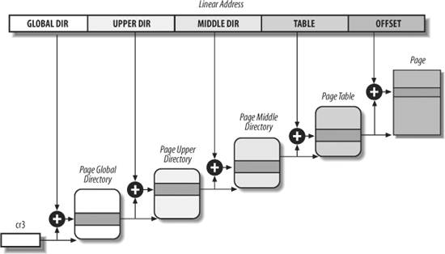
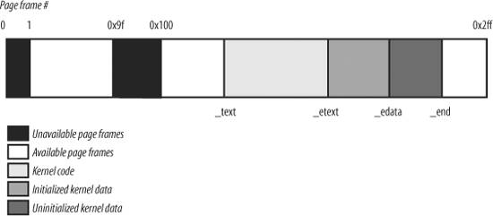

{% include JB/setup %}
{% raw %}
<div>


<a name="understandlk-CHP-2-SECT-5"></a>
<h3 class="docSection1Title">2.5. Paging in Linux</h3><a name="IDX-CHP-2-0419"></a>
<a name="IDX-CHP-2-0420"></a>
<p class="docText1">Linux adopts a common paging model that fits both 32-bit and 64-bit architectures. As explained in the earlier section "<a class="pcalibre5 docLink pcalibre1" href="understandlk-CHP-2-SECT-4.html#understandlk-CHP-2-SECT-4.6">Paging for 64-bit Architectures</a>," two paging levels are sufficient for 32-bit architectures, while 64-bit architectures require a higher number of paging levels. Up to version 2.6.10, the Linux paging model consisted of three paging levels. Starting with version 2.6.11, a four-level<a name="IDX-CHP-2-0421"></a> 
 paging model has been adopted.<sup class="docFootnote"><a class="pcalibre5 docLink pcalibre1" href="#understandlk-CHP-2-FN5">[*]</a></sup> The four types of page tables illustrated in <a class="pcalibre5 docLink pcalibre1" href="#understandlk-CHP-2-FIG-12">Figure 2-12</a> are called:</p><blockquote class="calibre22"><p class="docFootnote1"><sup class="calibre24"><a name="understandlk-CHP-2-FN5">[*]</a></sup> This change has been made to fully support the linear address bit splitting used by the x86_64 platform (see <a class="pcalibre5 docLink pcalibre1" href="understandlk-CHP-2-SECT-4.html#understandlk-CHP-2-TABLE-4">Table 2-4</a>).</p></blockquote>
<ul class="calibre11"><li class="calibre12"><p class="docText1">Page Global Directory</p></li><li class="calibre12"><p class="docText1">Page Upper Directory</p></li><li class="calibre12"><p class="docText1">Page Middle Directory</p></li><li class="calibre12"><p class="docText1">Page Table</p></li></ul>
<p class="docText1">The Page Global Directory includes the addresses of several Page Upper Directories, which in turn include the addresses of several Page Middle Directories, which in turn include the addresses of several Page Tables. Each Page Table entry points to a page frame. Thus the linear address can be split into up to five parts. <a class="pcalibre5 docLink pcalibre1" href="#understandlk-CHP-2-FIG-12">Figure 2-12</a> does not show the bit numbers, because the size of each part depends on the computer architecture.</p>
<p class="docText1">For 32-bit architectures with no Physical Address Extension, two paging levels are sufficient. Linux essentially eliminates the Page Upper Directory and the Page Middle Directory fields by saying that they contain zero bits. However, the positions of the Page Upper Directory and the Page Middle Directory in the sequence of pointers are kept so that the same code can work on 32-bit and 64-bit architectures. The kernel keeps a position for the Page Upper Directory and the Page Middle Directory by setting the number of entries in them to 1 and mapping these two entries into the proper entry of the Page Global Directory.</p>
<a name="understandlk-CHP-2-FIG-12"></a><p class="calibre14"><center class="calibre8">
<h5 class="docFigureTitle">Figure 2-12. The Linux paging model</h5>
</center></p><br class="calibre7"/>
<p class="docText1">For 32-bit architectures with the Physical Address Extension enabled, three paging levels are used. The Linux's Page Global Directory corresponds to the 80 x 86's Page Directory Pointer Table, the Page Upper Directory is eliminated, the Page Middle Directory corresponds to the 80 x 86's Page Directory, and the Linux's Page Table corresponds to the 80 x 86's Page Table.</p>
<p class="docText1">Finally, for 64-bit architectures three or four levels of paging are used depending on the linear address bit splitting performed by the hardware (see <a class="pcalibre5 docLink pcalibre1" href="understandlk-CHP-2-SECT-2.html#understandlk-CHP-2-TABLE-2">Table 2-2</a>).</p>
<p class="docText1">Linux's handling of processes relies heavily on paging. In fact, the automatic translation of linear addresses into physical ones makes the following design objectives feasible:</p>
<ul class="calibre11"><li class="calibre12"><p class="docText1">Assign a different physical address space to each process, ensuring an efficient protection against addressing errors.</p></li><li class="calibre12"><p class="docText1">Distinguish pages (groups of data) from page frames (physical addresses in main memory). This allows the same page to be stored in a page frame, then saved to disk and later reloaded in a different page frame. This is the basic ingredient of the virtual memory mechanism (see <a class="pcalibre5 docLink pcalibre1" href="understandlk-CHP-17.html#understandlk-CHP-17">Chapter 17</a>).</p></li></ul>
<p class="docText1">In the remaining part of this chapter, we will refer for the sake of concreteness to the paging circuitry used by the 80 x 86 processors.</p>
<p class="docText1">As we will see in <a class="pcalibre5 docLink pcalibre1" href="understandlk-CHP-9.html#understandlk-CHP-9">Chapter 9</a>, each process has its own Page Global Directory and its own set of Page Tables. When a process switch occurs (see the section "<a class="pcalibre5 docLink pcalibre1" href="understandlk-CHP-3-SECT-3.html#understandlk-CHP-3-SECT-3">Process Switch</a>" in <a class="pcalibre5 docLink pcalibre1" href="understandlk-CHP-3.html#understandlk-CHP-3">Chapter 3</a>), Linux saves the <tt class="calibre25">cr3</tt><a name="IDX-CHP-2-0422"></a> 
 control register in the descriptor of the process previously in execution and then loads <tt class="calibre25">cr3</tt> with the value stored in the descriptor of the process to be executed next. Thus, when the new process resumes its execution on the CPU, the paging unit refers to the correct set of Page Tables.</p>
<p class="docText1">Mapping linear to physical addresses now becomes a mechanical task, although it is still somewhat complex. The next few sections of this chapter are a rather tedious list of functions and macros that retrieve information the kernel needs to find addresses and manage the tables; most of the functions are one or two lines long. You may want to only skim these sections now, but it is useful to know the role of these functions and macros, because you'll see them often in discussions throughout this book.</p>
<a name="understandlk-CHP-2-SECT-5.1"></a>
<h4 class="docSection2Title">2.5.1. The Linear Address Fields</h4><a name="IDX-CHP-2-0423"></a>
<a name="IDX-CHP-2-0424"></a>
<a name="IDX-CHP-2-0425"></a>
<a name="IDX-CHP-2-0426"></a>
<a name="IDX-CHP-2-0427"></a>
<a name="IDX-CHP-2-0428"></a>
<a name="IDX-CHP-2-0429"></a>
<a name="IDX-CHP-2-0430"></a>
<a name="IDX-CHP-2-0431"></a>
<a name="IDX-CHP-2-0432"></a>
<a name="IDX-CHP-2-0433"></a>
<p class="docText1">The following macros simplify Page Table handling:</p>
<dl class="docText1"><dt class="calibre7"><br class="calibre7"/><p class="calibre14"><span class="docPubcolor"><span class="docPubcolor"><span class="docMonofont">PAGE_SHIFT</span></span></span></p></dt>
<dd class="calibre20"><p class="docList">Specifies the length in bits of the Offset field; when applied to 80 x 86 processors, it yields the value 12. Because all the addresses in a page must fit in the Offset field, the size of a page on 80 x 86 systems is 2<sup class="calibre37">12</sup> or the familiar 4,096 bytes; the <tt class="calibre25">PAGE_SHIFT</tt> of 12 can thus be considered the logarithm base 2 of the total page size. This macro is used by <tt class="calibre25">PAGE_SIZE</tt> to return the size of the page. Finally, the <tt class="calibre25">PAGE_MASK</tt> macro yields the value <tt class="calibre25">0xfffff000</tt> and is used to mask all the bits of the Offset field.</p></dd><dt class="calibre7"><br class="calibre7"/><p class="calibre14"><span class="docPubcolor"><span class="docPubcolor"><span class="docMonofont">PMD_SHIFT</span></span></span></p></dt>
<dd class="calibre20"><p class="docList">The total length in bits of the Offset and Table fields of a linear address; in other words, the logarithm of the size of the area a Page Middle Directory entry can map. The <tt class="calibre25">PMD_SIZE</tt> macro computes the size of the area mapped by a single entry of the Page Middle Directory  that is, of a Page Table. The <tt class="calibre25">PMD_MASK</tt> macro is used to mask all the bits of the Offset and Table fields.</p>
<p class="docList">When PAE is disabled, <tt class="calibre25">PMD_SHIFT</tt> yields the value 22 (12 from Offset plus 10 from Table), <tt class="calibre25">PMD_SIZE</tt> yields 2<sup class="calibre37">22</sup> or 4 MB, and <tt class="calibre25">PMD_MASK</tt> yields <tt class="calibre25">0xffc00000</tt>. Conversely, when PAE is enabled, <tt class="calibre25">PMD_SHIFT</tt> yields the value 21 (12 from Offset plus 9 from Table), <tt class="calibre25">PMD_SIZE</tt> yields 2<sup class="calibre37">21</sup> or 2 MB, and <tt class="calibre25">PMD_MASK</tt> yields <tt class="calibre25">0xffe00000</tt>.</p>
<p class="docList">Large pages do not make use of the last level of page tables, thus <tt class="calibre25">LARGE_PAGE_SIZE</tt>, which yields the size of a large page, is equal to <tt class="calibre25">PMD_SIZE</tt> (2<tt class="calibre25">PMD_SHIFT</tt>) while <tt class="calibre25">LARGE_PAGE_MASK</tt>, which is used to mask all the bits of the Offset and Table fields in a large page address, is equal to <tt class="calibre25">PMD_MASK</tt>.</p></dd><dt class="calibre7"><br class="calibre7"/><p class="calibre14"><span class="docPubcolor"><span class="docPubcolor"><span class="docMonofont">PUD_SHIFT</span></span></span></p></dt>
<dd class="calibre20"><p class="docList">Determines the logarithm of the size of the area a Page Upper Directory entry can map. The <tt class="calibre25">PUD_SIZE</tt> macro computes the size of the area mapped by a single entry of the Page Global Directory. The <tt class="calibre25">PUD_MASK</tt> macro is used to mask all the bits of the Offset, Table, Middle Air, and Upper Air fields.</p>
<p class="docList">On the 80 x 86 processors, <tt class="calibre25">PUD_SHIFT</tt> is always equal to <tt class="calibre25">PMD_SHIFT</tt> and <tt class="calibre25">PUD_SIZE</tt> is equal to 4 MB or 2 MB.</p></dd><dt class="calibre7"><br class="calibre7"/><p class="calibre14"><span class="docPubcolor"><span class="docPubcolor"><span class="docMonofont">PGDIR_SHIFT</span></span></span></p></dt>
<dd class="calibre20"><p class="docList">Determines the logarithm of the size of the area that a Page Global Directory entry can map. The <tt class="calibre25">PGDIR_SIZE</tt> macro computes the size of the area mapped by a single entry of the Page Global Directory. The <tt class="calibre25">PGDIR_MASK</tt> macro is used to mask all the bits of the Offset, Table, Middle Air, and Upper Air fields.</p>
<p class="docList">When PAE is disabled, <tt class="calibre25">PGDIR_SHIFT</tt> yields the value 22 (the same value yielded by <tt class="calibre25">PMD_SHIFT</tt> and by <tt class="calibre25">PUD_SHIFT</tt>), <tt class="calibre25">PGDIR_SIZE</tt> yields 2<sup class="calibre37">22</sup> or 4 MB, and <tt class="calibre25">PGDIR_MASK</tt> yields <tt class="calibre25">0xffc00000</tt>. Conversely, when PAE is enabled, <tt class="calibre25">PGDIR_SHIFT</tt> yields the value 30 (12 from Offset plus 9 from Table plus 9 from Middle Air), <tt class="calibre25">PGDIR_SIZE</tt> yields 2<sup class="calibre37">30</sup> or 1 GB, and <tt class="calibre25">PGDIR_MASK</tt> yields <tt class="calibre25">0xc0000000</tt>.</p></dd><dt class="calibre7"><br class="calibre7"/><p class="calibre14"><span class="docPubcolor"><span class="docPubcolor"><span class="docMonofont">PTRS_PER_PTE</span></span>, <span class="docPubcolor"><span class="docMonofont">PTRS_PER_PMD</span></span>, <span class="docPubcolor"><span class="docMonofont">PTRS_PER_PUD</span></span>, and <span class="docPubcolor"><span class="docMonofont">PTRS_PER_PGD</span></span></span></p></dt>
<dd class="calibre20"><p class="docList">Compute the number of entries in the Page Table, Page Middle Directory, Page Upper Directory, and Page Global Directory. They yield the values 1,024, 1, 1, and 1,024, respectively, when PAE is disabled; and the values 512, 512, 1, and 4, respectively, when PAE is enabled.</p></dd></dl>
<a name="understandlk-CHP-2-SECT-5.2"></a>
<h4 class="docSection2Title">2.5.2. Page Table Handling</h4><a name="IDX-CHP-2-0434"></a>
<a name="IDX-CHP-2-0435"></a>
<a name="IDX-CHP-2-0436"></a>
<a name="IDX-CHP-2-0437"></a>
<a name="IDX-CHP-2-0438"></a>
<a name="IDX-CHP-2-0439"></a>
<a name="IDX-CHP-2-0440"></a>
<a name="IDX-CHP-2-0441"></a>
<a name="IDX-CHP-2-0442"></a>
<a name="IDX-CHP-2-0443"></a>
<a name="IDX-CHP-2-0444"></a>
<a name="IDX-CHP-2-0445"></a>
<a name="IDX-CHP-2-0446"></a>
<a name="IDX-CHP-2-0447"></a>
<a name="IDX-CHP-2-0448"></a>
<a name="IDX-CHP-2-0449"></a>
<a name="IDX-CHP-2-0450"></a>
<a name="IDX-CHP-2-0451"></a>
<a name="IDX-CHP-2-0452"></a>
<a name="IDX-CHP-2-0453"></a>
<a name="IDX-CHP-2-0454"></a>
<a name="IDX-CHP-2-0455"></a>
<a name="IDX-CHP-2-0456"></a>
<a name="IDX-CHP-2-0457"></a>
<a name="IDX-CHP-2-0458"></a>
<a name="IDX-CHP-2-0459"></a>
<a name="IDX-CHP-2-0460"></a>
<a name="IDX-CHP-2-0461"></a>
<a name="IDX-CHP-2-0462"></a>
<a name="IDX-CHP-2-0463"></a>
<a name="IDX-CHP-2-0464"></a>
<a name="IDX-CHP-2-0465"></a>
<a name="IDX-CHP-2-0466"></a>
<a name="IDX-CHP-2-0467"></a>
<a name="IDX-CHP-2-0468"></a>
<a name="IDX-CHP-2-0469"></a>
<a name="IDX-CHP-2-0470"></a>
<a name="IDX-CHP-2-0471"></a>
<a name="IDX-CHP-2-0472"></a>
<a name="IDX-CHP-2-0473"></a>
<a name="IDX-CHP-2-0474"></a>
<a name="IDX-CHP-2-0475"></a>
<a name="IDX-CHP-2-0476"></a>
<a name="IDX-CHP-2-0477"></a>
<a name="IDX-CHP-2-0478"></a>
<a name="IDX-CHP-2-0479"></a>
<a name="IDX-CHP-2-0480"></a>
<a name="IDX-CHP-2-0481"></a>
<a name="IDX-CHP-2-0482"></a>
<a name="IDX-CHP-2-0483"></a>
<a name="IDX-CHP-2-0484"></a>
<a name="IDX-CHP-2-0485"></a>
<a name="IDX-CHP-2-0486"></a>
<a name="IDX-CHP-2-0487"></a>
<a name="IDX-CHP-2-0488"></a>
<a name="IDX-CHP-2-0489"></a>
<a name="IDX-CHP-2-0490"></a>
<a name="IDX-CHP-2-0491"></a>
<a name="IDX-CHP-2-0492"></a>
<a name="IDX-CHP-2-0493"></a>
<a name="IDX-CHP-2-0494"></a>
<a name="IDX-CHP-2-0495"></a>
<a name="IDX-CHP-2-0496"></a>
<a name="IDX-CHP-2-0497"></a>
<a name="IDX-CHP-2-0498"></a>
<a name="IDX-CHP-2-0499"></a>
<a name="IDX-CHP-2-0500"></a>
<a name="IDX-CHP-2-0501"></a>
<a name="IDX-CHP-2-0502"></a>
<a name="IDX-CHP-2-0503"></a>
<a name="IDX-CHP-2-0504"></a>
<a name="IDX-CHP-2-0505"></a>
<a name="IDX-CHP-2-0506"></a>
<a name="IDX-CHP-2-0507"></a>
<a name="IDX-CHP-2-0508"></a>
<a name="IDX-CHP-2-0509"></a>
<a name="IDX-CHP-2-0510"></a>
<a name="IDX-CHP-2-0511"></a>
<a name="IDX-CHP-2-0512"></a>
<a name="IDX-CHP-2-0513"></a>
<a name="IDX-CHP-2-0514"></a>
<a name="IDX-CHP-2-0515"></a>
<a name="IDX-CHP-2-0516"></a>
<a name="IDX-CHP-2-0517"></a>
<a name="IDX-CHP-2-0518"></a>
<a name="IDX-CHP-2-0519"></a>
<a name="IDX-CHP-2-0520"></a>
<a name="IDX-CHP-2-0521"></a>
<a name="IDX-CHP-2-0522"></a>
<a name="IDX-CHP-2-0523"></a>
<a name="IDX-CHP-2-0524"></a>
<a name="IDX-CHP-2-0525"></a>
<a name="IDX-CHP-2-0526"></a>
<a name="IDX-CHP-2-0527"></a>
<a name="IDX-CHP-2-0528"></a>
<a name="IDX-CHP-2-0529"></a>
<a name="IDX-CHP-2-0530"></a>
<a name="IDX-CHP-2-0531"></a>
<a name="IDX-CHP-2-0532"></a>
<a name="IDX-CHP-2-0533"></a>
<a name="IDX-CHP-2-0534"></a>
<a name="IDX-CHP-2-0535"></a>
<a name="IDX-CHP-2-0536"></a>
<a name="IDX-CHP-2-0537"></a>
<a name="IDX-CHP-2-0538"></a>
<a name="IDX-CHP-2-0539"></a>
<a name="IDX-CHP-2-0540"></a>
<a name="IDX-CHP-2-0541"></a>
<a name="IDX-CHP-2-0542"></a>
<a name="IDX-CHP-2-0543"></a>
<a name="IDX-CHP-2-0544"></a>
<a name="IDX-CHP-2-0545"></a>
<a name="IDX-CHP-2-0546"></a>
<p class="docText1"><tt class="calibre25">pte_t</tt>, <tt class="calibre25">pmd_t</tt>, <tt class="calibre25">pud_t</tt>, and <tt class="calibre25">pgd_t</tt> describe the format of, respectively, a Page Table, a Page Middle Directory, a Page Upper Directory, and a Page Global Directory entry. They are 64-bit data types when PAE is enabled and 32-bit data types otherwise. <tt class="calibre25">pgprot_t</tt> is another 64-bit (PAE enabled) or 32-bit (PAE disabled) data type that represents the protection flags associated with a single entry.</p>
<p class="docText1">Five type-conversion macros  <tt class="calibre25">_ _ pte</tt>, <tt class="calibre25">_ _ pmd</tt>, <tt class="calibre25">_ _ pud</tt>, <tt class="calibre25">_ _ pgd</tt>, and <tt class="calibre25">_ _ pgprot</tt>  cast an unsigned integer into the required type. Five other type-conversion macros  <tt class="calibre25">pte_val</tt>, <tt class="calibre25">pmd_val</tt>, <tt class="calibre25">pud_val</tt>, <tt class="calibre25">pgd_val</tt>, and <tt class="calibre25">pgprot_val</tt>  perform the reverse casting from one of the four previously mentioned specialized types into an unsigned integer.</p>
<p class="docText1">The kernel also provides several macros and functions to read or modify page table entries:</p>
<ul class="calibre11"><li class="calibre12"><p class="docText1"><tt class="calibre25">pte_none</tt>, <tt class="calibre25">pmd_none</tt>, <tt class="calibre25">pud_none</tt>, and <tt class="calibre25">pgd_none</tt> yield the value 1 if the corresponding entry has the value 0; otherwise, they yield the value 0.</p></li><li class="calibre12"><p class="docText1"><tt class="calibre25">pte_clear</tt>, <tt class="calibre25">pmd_clear</tt>, <tt class="calibre25">pud_clear</tt>, and <tt class="calibre25">pgd_clear</tt> clear an entry of the corresponding page table, thus forbidding a process to use the linear addresses mapped by the page table entry. The <tt class="calibre25">ptep_get_and_clear( )</tt> function clears a Page Table entry and returns the previous value.</p></li><li class="calibre12"><p class="docText1"><tt class="calibre25">set_pte</tt>, <tt class="calibre25">set_pmd</tt>, <tt class="calibre25">set_pud</tt>, and <tt class="calibre25">set_pgd</tt> write a given value into a page table entry; <tt class="calibre25">set_pte_atomic</tt> is identical to <tt class="calibre25">set_pte</tt>, but when PAE is enabled it also ensures that the 64-bit value is written atomically.</p></li><li class="calibre12"><p class="docText1"><tt class="calibre25">pte_same(a,b)</tt> returns 1 if two Page Table entries <tt class="calibre25">a</tt> and <tt class="calibre25">b</tt> refer to the same page and specify the same access privileges, 0 otherwise.</p></li><li class="calibre12"><p class="docText1"><tt class="calibre25">pmd_large(e)</tt> returns 1 if the Page Middle Directory entry <tt class="calibre25">e</tt> refers to a large page (2 MB or 4 MB), 0 otherwise.</p></li></ul>
<p class="docText1">The <tt class="calibre25">pmd_bad</tt> macro is used by functions to check Page Middle Directory entries passed as input parameters. It yields the value 1 if the entry points to a bad Page Table  that is, if at least one of the following conditions applies:</p>
<ul class="calibre11"><li class="calibre12"><p class="docText1">The page is not in main memory (<tt class="calibre25">Present</tt> flag cleared).</p></li><li class="calibre12"><p class="docText1">The page allows only Read access (<tt class="calibre25">Read/Write</tt> flag cleared).</p></li><li class="calibre12"><p class="docText1">Either <tt class="calibre25">Accessed</tt> or <tt class="calibre25">Dirty</tt> is cleared (Linux always forces these flags to be set for every existing Page Table).</p></li></ul>
<p class="docText1">The <tt class="calibre25">pud_bad</tt> and <tt class="calibre25">pgd_bad</tt> macros always yield 0. No <tt class="calibre25">pte_bad</tt> macro is defined, because it is legal for a Page Table entry to refer to a page that is not present in main memory, not writable, or not accessible at all.</p>
<p class="docText1">The <tt class="calibre25">pte_present</tt> macro yields the value 1 if either the <tt class="calibre25">Present</tt> flag or the <tt class="calibre25">Page Size</tt> flag of a Page Table entry is equal to 1, the value 0 otherwise. Recall that the <tt class="calibre25">Page Size</tt> flag in Page Table entries has no meaning for the paging unit of the microprocessor; the kernel, however, marks <tt class="calibre25">Present</tt> equal to 0 and <tt class="calibre25">Page Size</tt> equal to 1 for the pages present in main memory but without read, write, or execute privileges. In this way, any access to such pages triggers a Page Fault<a name="IDX-CHP-2-0547"></a> 
 exception because <tt class="calibre25">Present</tt> is cleared, and the kernel can detect that the fault is not due to a missing page by checking the value of <tt class="calibre25">Page Size</tt>.</p>
<p class="docText1">The <tt class="calibre25">pmd_present</tt> macro yields the value 1 if the <tt class="calibre25">Present</tt> flag of the corresponding entry is equal to 1  that is, if the corresponding page or Page Table is loaded in main memory. The <tt class="calibre25">pud_present</tt> and <tt class="calibre25">pgd_present</tt> macros always yield the value 1.</p>
<p class="docText1">The functions listed in <a class="pcalibre5 docLink pcalibre1" href="#understandlk-CHP-2-TABLE-5">Table 2-5</a> query the current value of any of the flags included in a Page Table entry; with the exception of <tt class="calibre25">pte_file()</tt>, these functions work properly only on Page Table entries for which <tt class="calibre25">pte_present</tt> returns 1.</p>
<a name="understandlk-CHP-2-TABLE-5"></a><p class="calibre14"><table cellspacing="0" frame="hsides" rules="all" cellpadding="4" width="100%" class="calibre15"><caption class="calibre33"><h5 class="docFigureTitle">Table 2-5. Page flag reading functions</h5></caption><colgroup class="calibre16"><col class="calibre17"/><col class="calibre17"/></colgroup><thead class="calibre18"><tr class="calibre34"><th class="thead" scope="col"><p class="docText1"><span class="calibre5">Function name</span></p></th><th class="thead" scope="col"><p class="docText1"><span class="calibre5">Description</span></p></th></tr></thead><tr class="calibre2"><td class="docTableCell"><p class="docText2"><tt class="calibre25">pte_user( )</tt></p></td><td class="docTableCell"><p class="docText2">Reads the <tt class="calibre25">User/Supervisor</tt> flag</p></td></tr><tr class="calibre2"><td class="docTableCell"><p class="docText2"><tt class="calibre25">pte_read( )</tt></p></td><td class="docTableCell"><p class="docText2">Reads the <tt class="calibre25">User/Supervisor</tt> flag (pages on the 80 x 86 processor cannot be protected against reading)</p></td></tr><tr class="calibre2"><td class="docTableCell"><p class="docText2"><tt class="calibre25">pte_write( )</tt></p></td><td class="docTableCell"><p class="docText2">Reads the <tt class="calibre25">Read/Write</tt> flag</p></td></tr><tr class="calibre2"><td class="docTableCell"><p class="docText2"><tt class="calibre25">pte_exec( )</tt></p></td><td class="docTableCell"><p class="docText2">Reads the <tt class="calibre25">User/Supervisor</tt> flag (pages on the 80 x 86 processor cannot be protected against code execution)</p></td></tr><tr class="calibre2"><td class="docTableCell"><p class="docText2"><tt class="calibre25">pte_dirty( )</tt></p></td><td class="docTableCell"><p class="docText2">Reads the <tt class="calibre25">Dirty</tt> flag</p></td></tr><tr class="calibre2"><td class="docTableCell"><p class="docText2"><tt class="calibre25">pte_young( )</tt></p></td><td class="docTableCell"><p class="docText2">Reads the <tt class="calibre25">Accessed</tt> flag</p></td></tr><tr class="calibre2"><td class="docTableCell"><p class="docText2"><tt class="calibre25">pte_file( )</tt></p></td><td class="docTableCell"><p class="docText2">Reads the <tt class="calibre25">Dirty</tt> flag (when the <tt class="calibre25">Present</tt> flag is cleared and the <tt class="calibre25">Dirty</tt> flag is set, the page belongs to a non-linear disk file mapping; see <a class="pcalibre5 docLink pcalibre1" href="understandlk-CHP-16.html#understandlk-CHP-16">Chapter 16</a>)</p></td></tr></table></p><br class="calibre7"/>
<p class="docText1">Another group of functions listed in <a class="pcalibre5 docLink pcalibre1" href="#understandlk-CHP-2-TABLE-6">Table 2-6</a> sets the value of the flags in a Page Table entry.</p>
<a name="understandlk-CHP-2-TABLE-6"></a><p class="calibre14"><table cellspacing="0" frame="hsides" rules="all" cellpadding="4" width="100%" class="calibre15"><caption class="calibre33"><h5 class="docFigureTitle">Table 2-6. Page flag setting functions</h5></caption><colgroup class="calibre16"><col class="calibre17"/><col class="calibre17"/></colgroup><thead class="calibre18"><tr class="calibre34"><th class="thead" scope="col"><p class="docText1"><span class="calibre5">Function name</span></p></th><th class="thead" scope="col"><p class="docText1"><span class="calibre5">Description</span></p></th></tr></thead><tr class="calibre2"><td class="docTableCell"><p class="docText2"><tt class="calibre25">mk_pte_huge( )</tt></p></td><td class="docTableCell"><p class="docText2">Sets the <tt class="calibre25">Page Size</tt> and <tt class="calibre25">Present</tt> flags of a Page Table entry</p></td></tr><tr class="calibre2"><td class="docTableCell"><p class="docText2"><tt class="calibre25">pte_wrprotect( )</tt></p></td><td class="docTableCell"><p class="docText2">Clears the <tt class="calibre25">Read/Write</tt> flag</p></td></tr><tr class="calibre2"><td class="docTableCell"><p class="docText2"><tt class="calibre25">pte_rdprotect( )</tt></p></td><td class="docTableCell"><p class="docText2">Clears the <tt class="calibre25">User/Supervisor</tt> flag</p></td></tr><tr class="calibre2"><td class="docTableCell"><p class="docText2"><tt class="calibre25">pte_exprotect( )</tt></p></td><td class="docTableCell"><p class="docText2">Clears the <tt class="calibre25">User/Supervisor</tt> flag</p></td></tr><tr class="calibre2"><td class="docTableCell"><p class="docText2"><tt class="calibre25">pte_mkwrite( )</tt></p></td><td class="docTableCell"><p class="docText2">Sets the <tt class="calibre25">Read/Write</tt> flag</p></td></tr><tr class="calibre2"><td class="docTableCell"><p class="docText2"><tt class="calibre25">pte_mkread( )</tt></p></td><td class="docTableCell"><p class="docText2">Sets the <tt class="calibre25">User/Supervisor</tt> flag</p></td></tr><tr class="calibre2"><td class="docTableCell"><p class="docText2"><tt class="calibre25">pte_mkexec( )</tt></p></td><td class="docTableCell"><p class="docText2">Sets the <tt class="calibre25">User/Supervisor</tt> flag</p></td></tr><tr class="calibre2"><td class="docTableCell"><p class="docText2"><tt class="calibre25">pte_mkclean( )</tt></p></td><td class="docTableCell"><p class="docText2">Clears the <tt class="calibre25">Dirty</tt> flag</p></td></tr><tr class="calibre2"><td class="docTableCell"><p class="docText2"><tt class="calibre25">pte_mkdirty( )</tt></p></td><td class="docTableCell"><p class="docText2">Sets the <tt class="calibre25">Dirty</tt> flag</p></td></tr><tr class="calibre2"><td class="docTableCell"><p class="docText2"><tt class="calibre25">pte_mkold( )</tt></p></td><td class="docTableCell"><p class="docText2">Clears the <tt class="calibre25">Accessed</tt> flag (makes the page old)</p></td></tr><tr class="calibre2"><td class="docTableCell"><p class="docText2"><tt class="calibre25">pte_mkyoung( )</tt></p></td><td class="docTableCell"><p class="docText2">Sets the <tt class="calibre25">Accessed</tt> flag (makes the page young)</p></td></tr><tr class="calibre2"><td class="docTableCell"><p class="docText2"><tt class="calibre25">pte_modify(p,v)</tt></p></td><td class="docTableCell"><p class="docText2">Sets all access rights in a Page Table entry <tt class="calibre25">p</tt> to a specified value <tt class="calibre25">v</tt></p></td></tr><tr class="calibre2"><td class="docTableCell"><p class="docText2"><tt class="calibre25">ptep_set_wrprotect( )</tt></p></td><td class="docTableCell"><p class="docText2">Like <tt class="calibre25">pte_wrprotect( )</tt>, but acts on a pointer to a Page Table entry</p></td></tr><tr class="calibre2"><td class="docTableCell"><p class="docText2"><tt class="calibre25">ptep_set_access_flags()</tt></p></td><td class="docTableCell"><p class="docText2">If the <tt class="calibre25">Dirty</tt> flag is set, sets the page's access rights to a specified value and invokes <tt class="calibre25">flush_tlb_page()</tt> (see the section "<a class="pcalibre5 docLink pcalibre1" href="understandlk-CHP-2-SECT-4.html#understandlk-CHP-2-SECT-4.8">Translation Lookaside Buffers (TLB)</a>" later in this chapter)</p></td></tr><tr class="calibre2"><td class="docTableCell"><p class="docText2"><tt class="calibre25">ptep_mkdirty(</tt>)</p></td><td class="docTableCell"><p class="docText2">Like <tt class="calibre25">pte_mkdirty( )</tt> but acts on a pointer to a Page Table entry</p></td></tr><tr class="calibre2"><td class="docTableCell"><p class="docText2"><tt class="calibre25">ptep_test_and_clear_dirty</tt>( )</p></td><td class="docTableCell"><p class="docText2">Like <tt class="calibre25">pte_mkclean( )</tt> but acts on a pointer to a Page Table entry and returns the old value of the flag</p></td></tr><tr class="calibre2"><td class="docTableCell"><p class="docText2"><tt class="calibre25">ptep_test_and_clear_young( )</tt></p></td><td class="docTableCell"><p class="docText2">Like <tt class="calibre25">pte_mkold( )</tt> but acts on a pointer to a Page Table entry and returns the old value of the flag</p></td></tr></table></p><br class="calibre7"/>
<p class="docText1">Now, let's discuss the macros listed in <a class="pcalibre5 docLink pcalibre1" href="#understandlk-CHP-2-TABLE-7">Table 2-7</a> that combine a page address and a group of protection flags into a page table entry or perform the reverse operation of extracting the page address from a page table entry. Notice that some of these macros refer to a page through the linear address of its "page descriptor" (see the section "<a class="pcalibre5 docLink pcalibre1" href="understandlk-CHP-8-SECT-1.html#understandlk-CHP-8-SECT-1.1">Page Descriptors</a>" in <a class="pcalibre5 docLink pcalibre1" href="understandlk-CHP-8.html#understandlk-CHP-8">Chapter 8</a>) rather than the linear address of the page itself.</p>
<a name="understandlk-CHP-2-TABLE-7"></a><p class="calibre14"><table cellspacing="0" frame="hsides" rules="all" cellpadding="4" width="100%" class="calibre15"><caption class="calibre33"><h5 class="docFigureTitle">Table 2-7. Macros acting on Page Table entries</h5></caption><colgroup class="calibre16"><col class="calibre17"/><col class="calibre17"/></colgroup><thead class="calibre18"><tr class="calibre34"><th class="thead" scope="col"><p class="docText1"><span class="calibre5">Macro name</span></p></th><th class="thead" scope="col"><p class="docText1"><span class="calibre5">Description</span></p></th></tr></thead><tr class="calibre2"><td class="docTableCell"><p class="docText2">pgd_index(addr)</p></td><td class="docTableCell"><p class="docText2">Yields the index (relative position) of the entry in the Page Global Directory that maps the linear address <tt class="calibre25">addr</tt>.</p></td></tr><tr class="calibre2"><td class="docTableCell"><p class="docText2"><tt class="calibre25">pgd_offset(mm, addr)</tt></p></td><td class="docTableCell"><p class="docText2">Receives as parameters the address of a memory descriptor <tt class="calibre25">cw</tt> (see <a class="pcalibre5 docLink pcalibre1" href="understandlk-CHP-9.html#understandlk-CHP-9">Chapter 9</a>) and a linear address <tt class="calibre25">addr</tt>. The macro yields the linear address of the entry in a Page Global Directory that corresponds to the address <tt class="calibre25">addr</tt>; the Page Global Directory is found through a pointer within the memory descriptor.</p></td></tr><tr class="calibre2"><td class="docTableCell"><p class="docText2"><tt class="calibre25">pgd_offset_k(addr)</tt></p></td><td class="docTableCell"><p class="docText2">Yields the linear address of the entry in the master kernel Page Global Directory<a name="IDX-CHP-2-0548"></a> 
 that corresponds to the address <tt class="calibre25">addr</tt> (see the later section "<a class="pcalibre5 docLink pcalibre1" href="#understandlk-CHP-2-SECT-5.5">Kernel Page Tables</a>").</p></td></tr><tr class="calibre2"><td class="docTableCell"><p class="docText2"><tt class="calibre25">pgd_page(pgd)</tt></p></td><td class="docTableCell"><p class="docText2">Yields the page descriptor address of the page frame containing the Page Upper Directory referred to by the Page Global Directory entry <tt class="calibre25">pgd</tt>. In a two- or three-level paging system, this macro is equivalent to <tt class="calibre25">pud_page()</tt> applied to the folded Page Upper Directory entry.</p></td></tr><tr class="calibre2"><td class="docTableCell"><p class="docText2"><tt class="calibre25">pud_offset(pgd, addr)</tt></p></td><td class="docTableCell"><p class="docText2">Receives as parameters a pointer <tt class="calibre25">pgd</tt> to a Page Global Directory entry and a linear address <tt class="calibre25">addr</tt>. The macro yields the linear address of the entry in a Page Upper Directory that corresponds to <tt class="calibre25">addr</tt>. In a two- or three-level paging system, this macro yields <tt class="calibre25">pgd</tt>, the address of a Page Global Directory entry.</p></td></tr><tr class="calibre2"><td class="docTableCell"><p class="docText2"><tt class="calibre25">pud_page(pud)</tt></p></td><td class="docTableCell"><p class="docText2">Yields the linear address of the Page Middle Directory referred to by the Page Upper Directory entry <tt class="calibre25">pud</tt>. In a two-level paging system, this macro is equivalent to <tt class="calibre25">pmd_page()</tt> applied to the folded Page Middle Directory entry.</p></td></tr><tr class="calibre2"><td class="docTableCell"><p class="docText2">pmd_index(addr)</p></td><td class="docTableCell"><p class="docText2">Yields the index (relative position) of the entry in the Page Middle Directory that maps the linear address <tt class="calibre25">addr</tt>.</p></td></tr><tr class="calibre2"><td class="docTableCell"><p class="docText2"><tt class="calibre25">pmd_offset(pud, addr)</tt></p></td><td class="docTableCell"><p class="docText2">Receives as parameters a pointer <tt class="calibre25">pud</tt> to a Page Upper Directory entry and a linear address <tt class="calibre25">addr</tt>. The macro yields the address of the entry in a Page Middle Directory that corresponds to <tt class="calibre25">addr</tt>. In a two-level paging system, it yields <tt class="calibre25">pud</tt>, the address of a Page Global Directory entry.</p></td></tr><tr class="calibre2"><td class="docTableCell"><p class="docText2"><tt class="calibre25">pmd_page(pmd)</tt></p></td><td class="docTableCell"><p class="docText2">Yields the page descriptor address of the Page Table referred to by the Page Middle Directory entry <tt class="calibre25">pmd</tt>. In a two-level paging system, <tt class="calibre25">pmd</tt> is actually an entry of a Page Global Directory.</p></td></tr><tr class="calibre2"><td class="docTableCell"><p class="docText2"><tt class="calibre25">mk_pte(p,prot)</tt></p></td><td class="docTableCell"><p class="docText2">Receives as parameters the address of a page descriptor <tt class="calibre25">p</tt> and a group of access rights <tt class="calibre25">prot</tt>, and builds the corresponding Page Table entry.</p></td></tr><tr class="calibre2"><td class="docTableCell"><p class="docText2">pte_index(addr)</p></td><td class="docTableCell"><p class="docText2">Yields the index (relative position) of the entry in the Page Table that maps the linear address <tt class="calibre25">addr</tt>.</p></td></tr><tr class="calibre2"><td class="docTableCell"><p class="docText2"><tt class="calibre25">pte_offset_kernel(dir, addr)</tt></p></td><td class="docTableCell"><p class="docText2">Yields the linear address of the Page Table that corresponds to the linear address <tt class="calibre25">addr</tt> mapped by the Page Middle Directory <tt class="calibre25">dir</tt>. Used only on the master kernel page tables<a name="IDX-CHP-2-0549"></a> 
 (see the later section "<a class="pcalibre5 docLink pcalibre1" href="#understandlk-CHP-2-SECT-5.5">Kernel Page Tables</a>").</p></td></tr><tr class="calibre2"><td class="docTableCell"><p class="docText2"><tt class="calibre25">pte_offset_map(dir, addr)</tt></p></td><td class="docTableCell"><p class="docText2">Receives as parameters a pointer <tt class="calibre25">dir</tt> to a Page Middle Directory entry and a linear address <tt class="calibre25">addr</tt>; it yields the linear address of the entry in the Page Table that corresponds to the linear address <tt class="calibre25">addr</tt>. If the Page Table is kept in high memory, the kernel establishes a temporary kernel mapping (see the section "<a class="pcalibre5 docLink pcalibre1" href="understandlk-CHP-8-SECT-1.html#understandlk-CHP-8-SECT-1.6">Kernel Mappings of High-Memory Page Frames</a>" in <a class="pcalibre5 docLink pcalibre1" href="understandlk-CHP-8.html#understandlk-CHP-8">Chapter 8</a>), to be released by means of <tt class="calibre25">pte_unmap</tt>. The macros <tt class="calibre25">pte_offset_map_nested</tt> and <tt class="calibre25">pte_unmap_nested</tt> are identical, but they use a different temporary kernel mapping.</p></td></tr><tr class="calibre2"><td class="docTableCell"><p class="docText2"><tt class="calibre25">pte_page(x)</tt></p></td><td class="docTableCell"><p class="docText2">Returns the page descriptor address of the page referenced by the Page Table entry <tt class="calibre25">x</tt>.</p></td></tr><tr class="calibre2"><td class="docTableCell"><p class="docText2"><tt class="calibre25">pte_to_pgoff(pte)</tt></p></td><td class="docTableCell"><p class="docText2">Extracts from the content <tt class="calibre25">pte</tt> of a Page Table entry the file offset corresponding to a page belonging to a non-linear file memory mapping (see the section "<a class="pcalibre5 docLink pcalibre1" href="understandlk-CHP-16-SECT-2.html#understandlk-CHP-16-SECT-2.6">Non-Linear Memory Mappings</a>" in <a class="pcalibre5 docLink pcalibre1" href="understandlk-CHP-16.html#understandlk-CHP-16">Chapter 16</a>).</p></td></tr><tr class="calibre2"><td class="docTableCell"><p class="docText2"><tt class="calibre25">pgoff_to_pte(offset )</tt></p></td><td class="docTableCell"><p class="docText2">Sets up the content of a Page Table entry for a page belonging to a non-linear file memory mapping.</p></td></tr></table></p><br class="calibre7"/>
<p class="docText1">The last group of functions of this long list was introduced to simplify the creation and deletion of page table entries.</p>
<p class="docText1">When two-level<a name="IDX-CHP-2-0550"></a> 
 paging is used, creating or deleting a Page Middle Directory entry is trivial. As we explained earlier in this section, the Page Middle Directory contains a single entry that points to the subordinate Page Table. Thus, the Page Middle Directory entry <span class="docEmphasis">is</span> the entry within the Page Global Directory, too. When dealing with Page Tables, however, creating an entry may be more complex, because the Page Table that is supposed to contain it might not exist. In such cases, it is necessary to allocate a new page frame, fill it with zeros, and add the entry.</p>
<p class="docText1">If PAE is enabled, the kernel uses three-level<a name="IDX-CHP-2-0551"></a> 
 paging. When the kernel creates a new Page Global Directory, it also allocates the four corresponding Page Middle Directories; these are freed only when the parent Page Global Directory is released.</p>
<p class="docText1">When two or three-level paging is used, the Page Upper Directory entry is always mapped as a single entry within the Page Global Directory.</p>
<p class="docText1">As usual, the description of the functions listed in <a class="pcalibre5 docLink pcalibre1" href="#understandlk-CHP-2-TABLE-8">Table 2-8</a> refers to the 80 x 86 architecture.</p>
<a name="understandlk-CHP-2-TABLE-8"></a><p class="calibre14"><table cellspacing="0" frame="hsides" rules="all" cellpadding="4" width="100%" class="calibre15"><caption class="calibre33"><h5 class="docFigureTitle">Table 2-8. Page allocation functions</h5></caption><colgroup class="calibre16"><col class="calibre17"/><col class="calibre17"/></colgroup><thead class="calibre18"><tr class="calibre34"><th class="thead" scope="col"><p class="docText1"><span class="calibre5">Function name</span></p></th><th class="thead" scope="col"><p class="docText1"><span class="calibre5">Description</span></p></th></tr></thead><tr class="calibre2"><td class="docTableCell"><p class="docText2"><tt class="calibre25">pgd_alloc(mm)</tt></p></td><td class="docTableCell"><p class="docText2">Allocates a new Page Global Directory; if PAE is enabled, it also allocates the three children Page Middle Directories that map the User Mode linear addresses. The argument <tt class="calibre25">mm</tt> (the address of a memory descriptor) is ignored on the 80 x 86 architecture.</p></td></tr><tr class="calibre2"><td class="docTableCell"><p class="docText2"><tt class="calibre25">pgd_free( pgd)</tt></p></td><td class="docTableCell"><p class="docText2">Releases the Page Global Directory at address <tt class="calibre25">pgd</tt>; if PAE is enabled, it also releases the three Page Middle Directories that map the User Mode linear addresses.</p></td></tr><tr class="calibre2"><td class="docTableCell"><p class="docText2"><tt class="calibre25">pud_alloc(mm, pgd, addr)</tt></p></td><td class="docTableCell"><p class="docText2">In a two- or three-level paging system, this function does nothing: it simply returns the linear address of the Page Global Directory entry <tt class="calibre25">pgd</tt>.</p></td></tr><tr class="calibre2"><td class="docTableCell"><p class="docText2"><tt class="calibre25">pud_free(x)</tt></p></td><td class="docTableCell"><p class="docText2">In a two- or three-level paging system, this macro does nothing.</p></td></tr><tr class="calibre2"><td class="docTableCell"><p class="docText2"><tt class="calibre25">pmd_alloc(mm, pud, addr)</tt></p></td><td class="docTableCell"><p class="docText2">Defined so generic three-level paging systems can allocate a new Page Middle Directory for the linear address <tt class="calibre25">addr</tt>. If PAE is not enabled, the function simply returns the input parameter <tt class="calibre25">pud</tt>  that is, the address of the entry in the Page Global Directory. If PAE is enabled, the function returns the linear address of the Page Middle Directory entry that maps the linear address <tt class="calibre25">addr</tt>. The argument <tt class="calibre25">cw</tt> is ignored.</p></td></tr><tr class="calibre2"><td class="docTableCell"><p class="docText2"><tt class="calibre25">pmd_free(x)</tt></p></td><td class="docTableCell"><p class="docText2">Does nothing, because Page Middle Directories are allocated and deallocated together with their parent Page Global Directory.</p></td></tr><tr class="calibre2"><td class="docTableCell"><p class="docText2"><tt class="calibre25">pte_alloc_map(mm, pmd, addr)</tt></p></td><td class="docTableCell"><p class="docText2">Receives as parameters the address of a Page Middle Directory entry <tt class="calibre25">pmd</tt> and a linear address <tt class="calibre25">addr</tt>, and returns the address of the Page Table entry corresponding to <tt class="calibre25">addr</tt>. If the Page Middle Directory entry is null, the function allocates a new Page Table by invoking <tt class="calibre25">pte_alloc_one( )</tt>. If a new Page Table is allocated, the entry corresponding to <tt class="calibre25">addr</tt> is initialized and the <tt class="calibre25">User/Supervisor</tt> flag is set. If the Page Table is kept in high memory, the kernel establishes a temporary kernel mapping (see the section "<a class="pcalibre5 docLink pcalibre1" href="understandlk-CHP-8-SECT-1.html#understandlk-CHP-8-SECT-1.6">Kernel Mappings of High-Memory Page Frames</a>" in <a class="pcalibre5 docLink pcalibre1" href="understandlk-CHP-8.html#understandlk-CHP-8">Chapter 8</a>), to be released by <tt class="calibre25">pte_unmap</tt>.</p></td></tr><tr class="calibre2"><td class="docTableCell"><p class="docText2">pte_alloc_kernel(mm, pmd, addr)</p></td><td class="docTableCell"><p class="docText2">If the Page Middle Directory entry <tt class="calibre25">pmd</tt> associated with the address <tt class="calibre25">addr</tt> is null, the function allocates a new Page Table. It then returns the linear address of the Page Table entry associated with <tt class="calibre25">addr</tt>. Used only for master kernel page tables<a name="IDX-CHP-2-0552"></a> 
 (see the later section "<a class="pcalibre5 docLink pcalibre1" href="#understandlk-CHP-2-SECT-5.5">Kernel Page Tables</a>").</p></td></tr><tr class="calibre2"><td class="docTableCell"><p class="docText2"><tt class="calibre25">pte_free(pte)</tt></p></td><td class="docTableCell"><p class="docText2">Releases the Page Table associated with the <tt class="calibre25">pte</tt> page descriptor pointer.</p></td></tr><tr class="calibre2"><td class="docTableCell"><p class="docText2"><tt class="calibre25">pte_free_kernel(pte)</tt></p></td><td class="docTableCell"><p class="docText2">Equivalent to <tt class="calibre25">pte_free( )</tt>, but used for master kernel page tables.</p></td></tr><tr class="calibre2"><td class="docTableCell"><p class="docText2"><tt class="calibre25">clear_page_range(mmu, start,end)</tt></p></td><td class="docTableCell"><p class="docText2">Clears the contents of the page tables of a process from linear address <tt class="calibre25">start</tt> to <tt class="calibre25">end</tt> by iteratively releasing its Page Tables and clearing the Page Middle Directory entries.</p></td></tr></table></p><br class="calibre7"/>
<a name="understandlk-CHP-2-SECT-5.3"></a>
<h4 class="docSection2Title">2.5.3. Physical Memory Layout</h4><a name="IDX-CHP-2-0553"></a>
<a name="IDX-CHP-2-0554"></a>
<a name="IDX-CHP-2-0555"></a>
<a name="IDX-CHP-2-0556"></a>
<a name="IDX-CHP-2-0557"></a>
<a name="IDX-CHP-2-0558"></a>
<a name="IDX-CHP-2-0559"></a>
<a name="IDX-CHP-2-0560"></a>
<a name="IDX-CHP-2-0561"></a>
<a name="IDX-CHP-2-0562"></a>
<a name="IDX-CHP-2-0563"></a>
<a name="IDX-CHP-2-0564"></a>
<a name="IDX-CHP-2-0565"></a>
<a name="IDX-CHP-2-0566"></a>
<a name="IDX-CHP-2-0567"></a>
<a name="IDX-CHP-2-0568"></a>
<a name="IDX-CHP-2-0569"></a>
<a name="IDX-CHP-2-0570"></a>
<a name="IDX-CHP-2-0571"></a>
<a name="IDX-CHP-2-0572"></a>
<a name="IDX-CHP-2-0573"></a>
<a name="IDX-CHP-2-0574"></a>
<a name="IDX-CHP-2-0575"></a>
<a name="IDX-CHP-2-0576"></a>
<p class="docText1">During the initialization phase the kernel must build a <span class="docEmphasis">physical addresses map</span><a name="IDX-CHP-2-0577"></a> 
 that specifies which physical address ranges are usable by the kernel and which are unavailable (either because they map hardware devices' I/O shared memory or because the corresponding page frames contain BIOS data).</p>
<p class="docText1">The kernel considers the following page frames as <span class="docEmphasis">reserved</span><a name="IDX-CHP-2-0578"></a> 
:</p>
<ul class="calibre11"><li class="calibre12"><p class="docText1">Those falling in the unavailable physical address ranges</p></li><li class="calibre12"><p class="docText1">Those containing the kernel's code and initialized data structures</p></li></ul>
<p class="docText1">A page contained in a reserved page frame can never be dynamically assigned or swapped to disk.</p>
<p class="docText1">As a general rule, the Linux kernel is installed in RAM starting from the physical address <tt class="calibre25">0x00100000</tt>  i.e., from the second megabyte. The total number of page frames required depends on how the kernel is configured. A typical configuration yields a kernel that can be loaded in less than 3 MB of RAM.</p>
<p class="docText1">Why isn't the kernel loaded starting with the first available megabyte of RAM? Well, the PC architecture has several peculiarities that must be taken into account. For example:</p>
<ul class="calibre11"><li class="calibre12"><p class="docText1">Page frame 0 is used by BIOS to store the system hardware configuration detected during the <span class="docEmphasis">Power-On Self-Test</span>(<span class="docEmphasis">POST</span>); the BIOS of many laptops, moreover, writes data on this page frame even after the system is initialized.</p></li><li class="calibre12"><p class="docText1">Physical addresses ranging from <tt class="calibre25">0x000a0000</tt> to <tt class="calibre25">0x000fffff</tt> are usually reserved to BIOS routines and to map the internal memory of ISA graphics cards. This area is the well-known hole from 640 KB to 1 MB in all IBM-compatible PCs: the physical addresses exist but they are reserved, and the corresponding page frames cannot be used by the operating system.</p></li><li class="calibre12"><p class="docText1">Additional page frames within the first megabyte may be reserved by specific computer models. For example, the IBM ThinkPad maps the <tt class="calibre25">0xa0</tt> page frame into the <tt class="calibre25">0x9f</tt> one.</p></li></ul>
<p class="docText1">In the early stage of the boot sequence (see Appendix A), the kernel queries the BIOS and learns the size of the physical memory. In recent computers, the kernel also invokes a BIOS procedure to build a list of physical address ranges and their corresponding memory types.</p>
<p class="docText1">Later, the kernel executes the <tt class="calibre25">machine_specific_memory_setup( )</tt> function, which builds the physical addresses map (see <a class="pcalibre5 docLink pcalibre1" href="#understandlk-CHP-2-TABLE-9">Table 2-9</a> for an example). Of course, the kernel builds this table on the basis of the BIOS list, if this is available; otherwise the kernel builds the table following the conservative default setup: all page frames with numbers from <tt class="calibre25">0x9f</tt> (<tt class="calibre25">LOWMEMSIZE( )</tt>) to <tt class="calibre25">0x100</tt> (<tt class="calibre25">HIGH_MEMORY</tt>) are marked as reserved.</p>
<a name="understandlk-CHP-2-TABLE-9"></a><p class="calibre14"><table cellspacing="0" frame="hsides" rules="all" cellpadding="4" width="100%" class="calibre15"><caption class="calibre33"><h5 class="docFigureTitle">Table 2-9. Example of BIOS-provided physical addresses map</h5></caption><colgroup class="calibre16"><col class="calibre17"/><col class="calibre17"/><col class="calibre17"/></colgroup><thead class="calibre18"><tr class="calibre34"><th class="thead" scope="col"><p class="docText1"><span class="calibre5">Start</span></p></th><th class="thead" scope="col"><p class="docText1"><span class="calibre5">End</span></p></th><th class="thead" scope="col"><p class="docText1"><span class="calibre5">Type</span></p></th></tr></thead><tr class="calibre2"><td class="docTableCell"><p class="docText2"><tt class="calibre25">0x00000000</tt></p></td><td class="docTableCell"><p class="docText2"><tt class="calibre25">0x0009ffff</tt></p></td><td class="docTableCell"><p class="docText2">Usable</p></td></tr><tr class="calibre2"><td class="docTableCell"><p class="docText2"><tt class="calibre25">0x000f0000</tt></p></td><td class="docTableCell"><p class="docText2"><tt class="calibre25">0x000fffff</tt></p></td><td class="docTableCell"><p class="docText2">Reserved</p></td></tr><tr class="calibre2"><td class="docTableCell"><p class="docText2"><tt class="calibre25">0x00100000</tt></p></td><td class="docTableCell"><p class="docText2"><tt class="calibre25">0x07feffff</tt></p></td><td class="docTableCell"><p class="docText2">Usable</p></td></tr><tr class="calibre2"><td class="docTableCell"><p class="docText2"><tt class="calibre25">0x07ff0000</tt></p></td><td class="docTableCell"><p class="docText2"><tt class="calibre25">0x07ff2fff</tt></p></td><td class="docTableCell"><p class="docText2">ACPI<a name="IDX-CHP-2-0579"></a> 
 data</p></td></tr><tr class="calibre2"><td class="docTableCell"><p class="docText2"><tt class="calibre25">0x07ff3000</tt></p></td><td class="docTableCell"><p class="docText2"><tt class="calibre25">0x07ffffff</tt></p></td><td class="docTableCell"><p class="docText2">ACPI NVS</p></td></tr><tr class="calibre2"><td class="docTableCell"><p class="docText2"><tt class="calibre25">0xffff0000</tt></p></td><td class="docTableCell"><p class="docText2"><tt class="calibre25">0xffffffff</tt></p></td><td class="docTableCell"><p class="docText2">Reserved</p></td></tr></table></p><br class="calibre7"/>
<p class="docText1">A typical configuration for a computer having 128 MB of RAM is shown in <a class="pcalibre5 docLink pcalibre1" href="#understandlk-CHP-2-TABLE-9">Table 2-9</a>. The physical address range from <tt class="calibre25">0x07ff0000</tt> to <tt class="calibre25">0x07ff2fff</tt> stores information about the hardware devices of the system written by the BIOS in the POST phase; during the initialization phase, the kernel copies such information in a suitable kernel data structure, and then considers these page frames usable. Conversely, the physical address range of <tt class="calibre25">0x07ff3000</tt> to <tt class="calibre25">0x07ffffff</tt> is mapped to ROM chips of the hardware devices. The physical address range starting from <tt class="calibre25">0xffff0000</tt> is marked as reserved, because it is mapped by the hardware to the BIOS's ROM chip (see Appendix A). Notice that the BIOS may not provide information for some physical address ranges (in the table, the range is <tt class="calibre25">0x000a0000</tt> to <tt class="calibre25">0x000effff</tt>). To be on the safe side, Linux assumes that such ranges are not usable.</p>
<p class="docText1">The kernel might not see all physical memory reported by the BIOS: for instance, the kernel can address only 4 GB of RAM if it has not been compiled with PAE support, even if a larger amount of physical memory is actually available. The <tt class="calibre25">setup_memory( )</tt> function is invoked right after <tt class="calibre25">machine_specific_memory_setup( )</tt>: it analyzes the table of physical memory regions and initializes a few variables that describe the kernel's physical memory layout. These variables are shown in <a class="pcalibre5 docLink pcalibre1" href="#understandlk-CHP-2-TABLE-10">Table 2-10</a>.</p>
<a name="understandlk-CHP-2-TABLE-10"></a><p class="calibre14"><table cellspacing="0" frame="hsides" rules="all" cellpadding="4" width="100%" class="calibre15"><caption class="calibre33"><h5 class="docFigureTitle">Table 2-10. Variables describing the kernel's physical memory layout</h5></caption><colgroup class="calibre16"><col class="calibre17"/><col class="calibre17"/></colgroup><thead class="calibre18"><tr class="calibre34"><th class="thead" scope="col"><p class="docText1"><span class="calibre5">Variable name</span></p></th><th class="thead" scope="col"><p class="docText1"><span class="calibre5">Description</span></p></th></tr></thead><tr class="calibre2"><td class="docTableCell"><p class="docText2"><tt class="calibre25">num_physpages</tt></p></td><td class="docTableCell"><p class="docText2">Page frame number of the highest usable page frame</p></td></tr><tr class="calibre2"><td class="docTableCell"><p class="docText2"><tt class="calibre25">totalram_pages</tt></p></td><td class="docTableCell"><p class="docText2">Total number of usable page frames</p></td></tr><tr class="calibre2"><td class="docTableCell"><p class="docText2">min_low_pfn</p></td><td class="docTableCell"><p class="docText2">Page frame number of the first usable page frame after the kernel image in RAM</p></td></tr><tr class="calibre2"><td class="docTableCell"><p class="docText2"><tt class="calibre25">max_pfn</tt></p></td><td class="docTableCell"><p class="docText2">Page frame number of the last usable page frame</p></td></tr><tr class="calibre2"><td class="docTableCell"><p class="docText2"><tt class="calibre25">max_low_pfn</tt></p></td><td class="docTableCell"><p class="docText2">Page frame number of the last page frame directly mapped by the kernel (low memory)</p></td></tr><tr class="calibre2"><td class="docTableCell"><p class="docText2">totalhigh_pages</p></td><td class="docTableCell"><p class="docText2">Total number of page frames not directly mapped by the kernel (high memory)</p></td></tr><tr class="calibre2"><td class="docTableCell"><p class="docText2"><tt class="calibre25">highstart_pfn</tt></p></td><td class="docTableCell"><p class="docText2">Page frame number of the first page frame not directly mapped by the kernel</p></td></tr><tr class="calibre2"><td class="docTableCell"><p class="docText2"><tt class="calibre25">highend_pfn</tt></p></td><td class="docTableCell"><p class="docText2">Page frame number of the last page frame not directly mapped by the kernel</p></td></tr></table></p><br class="calibre7"/>
<p class="docText1">To avoid loading the kernel into groups of noncontiguous page frames, Linux prefers to skip the first megabyte of RAM. Clearly, page frames not reserved by the PC architecture will be used by Linux to store dynamically assigned pages.</p>
<p class="docText1"><a class="pcalibre5 docLink pcalibre1" href="#understandlk-CHP-2-FIG-13">Figure 2-13</a> shows how the first 3 MB of RAM are filled by Linux. We have assumed that the kernel requires less than 3 MB of RAM.</p>
<p class="docText1">The symbol <tt class="calibre25">_text</tt>, which corresponds to physical address <tt class="calibre25">0x00100000</tt>, denotes the address of the first byte of kernel code. The end of the kernel code is similarly identified by the symbol <tt class="calibre25">_etext</tt>. Kernel data is divided into two groups: <span class="docEmphasis">initialized</span> and <span class="docEmphasis">uninitialized</span>. The initialized data starts right after <tt class="calibre25">_etext</tt> and ends at <tt class="calibre25">_edata</tt>. The uninitialized data follows and ends up at <tt class="calibre25">_end</tt>.</p>
<p class="docText1">The symbols appearing in the figure are not defined in Linux source code; they are produced while compiling the kernel.<sup class="docFootnote"><a class="pcalibre5 docLink pcalibre1" href="#understandlk-CHP-2-FN6">[*]</a></sup></p><blockquote class="calibre22"><p class="docFootnote1"><sup class="calibre24"><a name="understandlk-CHP-2-FN6">[*]</a></sup> You can find the linear address of these symbols in the file <span class="docEmphasis">System.map</span>, which is created right after the kernel is compiled.</p></blockquote>
<a name="understandlk-CHP-2-FIG-13"></a><p class="calibre14"><center class="calibre8">
<h5 class="docFigureTitle">Figure 2-13. The first 768 page frames (3 MB) in Linux 2.6</h5>
</center></p><br class="calibre7"/>
<a name="understandlk-CHP-2-SECT-5.4"></a>
<h4 class="docSection2Title">2.5.4. Process Page Tables</h4><a name="IDX-CHP-2-0580"></a>
<a name="IDX-CHP-2-0581"></a>
<a name="IDX-CHP-2-0582"></a>
<a name="IDX-CHP-2-0583"></a>
<a name="IDX-CHP-2-0584"></a>
<p class="docText1">The linear address space of a process<a name="IDX-CHP-2-0585"></a> 
 is divided into two parts:</p>
<ul class="calibre11"><li class="calibre12"><p class="docText1">Linear addresses from <tt class="calibre25">0x00000000</tt> to <tt class="calibre25">0xbfffffff</tt> can be addressed when the process runs in either User or Kernel Mode.</p></li><li class="calibre12"><p class="docText1">Linear addresses from <tt class="calibre25">0xc0000000</tt> to <tt class="calibre25">0xffffffff</tt> can be addressed only when the process runs in Kernel Mode.</p></li></ul>
<p class="docText1">When a process runs in User Mode, it issues linear addresses smaller than <tt class="calibre25">0xc0000000</tt>; when it runs in Kernel Mode, it is executing kernel code and the linear addresses issued are greater than or equal to <tt class="calibre25">0xc0000000</tt>. In some cases, however, the kernel must access the User Mode linear address space to retrieve or store data.</p>
<p class="docText1">The <tt class="calibre25">PAGE_OFFSET</tt> macro yields the value <tt class="calibre25">0xc0000000</tt>; this is the offset in the linear address space of a process where the kernel lives. In this book, we often refer directly to the number <tt class="calibre25">0xc0000000</tt> instead.</p>
<p class="docText1">The content of the first entries of the Page Global Directory that map linear addresses lower than <tt class="calibre25">0xc0000000</tt> (the first 768 entries with PAE disabled, or the first 3 entries with PAE enabled) depends on the specific process. Conversely, the remaining entries should be the same for all processes and equal to the corresponding entries of the master kernel Page Global Directory<a name="IDX-CHP-2-0586"></a> 
 (see the following section).</p>
<a name="understandlk-CHP-2-SECT-5.5"></a>
<h4 class="docSection2Title">2.5.5. Kernel Page Tables</h4>
<p class="docText1">The kernel maintains a set of page tables for its own use, rooted at a so-called <span class="docEmphasis">master kernel Page Global Directory</span>. After system initialization, this set of page tables is never directly used by any process or kernel thread; rather, the highest entries of the master kernel Page Global Directory are the reference model for the corresponding entries of the Page Global Directories of every regular process in the system.</p>
<p class="docText1">We explain how the kernel ensures that changes to the master kernel Page Global Directory are propagated to the Page Global Directories that are actually used by processes in the section "<a class="pcalibre5 docLink pcalibre1" href="understandlk-CHP-8-SECT-3.html#understandlk-CHP-8-SECT-3.1">Linear Addresses of Noncontiguous Memory Areas</a>" in <a class="pcalibre5 docLink pcalibre1" href="understandlk-CHP-8.html#understandlk-CHP-8">Chapter 8</a>.</p>
<p class="docText1">We now describe how the kernel initializes its own page tables. This is a two-phase activity. In fact, right after the kernel image is loaded into memory, the CPU is still running in real mode; thus, paging is not enabled.</p>
<p class="docText1">In the first phase, the kernel creates a limited address space including the kernel's code and data segments, the initial Page Tables, and 128 KB for some dynamic data structures. This minimal address space is just large enough to install the kernel in RAM and to initialize its core data structures.</p>
<p class="docText1">In the second phase, the kernel takes advantage of all of the existing RAM and sets up the page tables properly. Let us examine how this plan is executed.</p>
<a name="understandlk-CHP-2-SECT-5.5.1"></a>
<h5 class="docSection3Title">2.5.5.1. Provisional kernel Page Tables</h5><a name="IDX-CHP-2-0587"></a>
<p class="docText1">A provisional Page Global Directory<a name="IDX-CHP-2-0588"></a> 
 is initialized statically during kernel compilation, while the provisional Page Tables are initialized by the <tt class="calibre25">startup_32( )</tt> assembly language function defined in <i class="docEmphasis">arch/i386/kernel/head.S</i><a name="IDX-CHP-2-0589"></a> 
. We won't bother mentioning the Page Upper Directories and Page Middle Directories anymore, because they are equated to Page Global Directory entries. PAE support is not enabled at this stage.</p>
<p class="docText1">The provisional Page Global Directory is contained in the <tt class="calibre25">swapper_pg_dir</tt> variable. The provisional Page Tables are stored starting from <tt class="calibre25">pg0</tt>, right after the end of the kernel's uninitialized data segments (symbol <tt class="calibre25">_end</tt> in <a class="pcalibre5 docLink pcalibre1" href="#understandlk-CHP-2-FIG-13">Figure 2-13</a>). For the sake of simplicity, let's assume that the kernel's segments, the provisional Page Tables, and the 128 KB memory area fit in the first 8 MB of RAM. In order to map 8 MB of RAM, two Page Tables are required.</p>
<p class="docText1">The objective of this first phase of paging is to allow these 8 MB of RAM to be easily addressed both in real mode and protected mode. Therefore, the kernel must create a mapping from both the linear addresses <tt class="calibre25">0x00000000</tt> through <tt class="calibre25">0x007fffff</tt> and the linear addresses <tt class="calibre25">0xc0000000</tt> through <tt class="calibre25">0xc07fffff</tt> into the physical addresses <tt class="calibre25">0x00000000</tt> through <tt class="calibre25">0x007fffff</tt>. In other words, the kernel during its first phase of initialization can address the first 8 MB of RAM by either linear addresses identical to the physical ones or 8 MB worth of linear addresses, starting from <tt class="calibre25">0xc0000000</tt>.</p>
<p class="docText1">The Kernel creates the desired mapping by filling all the <tt class="calibre25">swapper_pg_dir</tt> entries with zeroes, except for entries 0, 1, <tt class="calibre25">0x300</tt> (decimal 768), and <tt class="calibre25">0x301</tt> (decimal 769); the latter two entries span all linear addresses between <tt class="calibre25">0xc0000000</tt> and <tt class="calibre25">0xc07fffff</tt>. The 0, 1, <tt class="calibre25">0x300</tt>, and <tt class="calibre25">0x301</tt> enTRies are initialized as follows:</p>
<ul class="calibre11"><li class="calibre12"><p class="docText1">The address field of entries 0 and <tt class="calibre25">0x300</tt> is set to the physical address of <tt class="calibre25">pg0</tt>, while the address field of entries 1 and <tt class="calibre25">0x301</tt> is set to the physical address of the page frame following <tt class="calibre25">pg0</tt>.</p></li><li class="calibre12"><p class="docText1">The <tt class="calibre25">Present</tt>, <tt class="calibre25">Read/Write</tt>, and <tt class="calibre25">User/Supervisor</tt> flags are set in all four entries.</p></li><li class="calibre12"><p class="docText1">The <tt class="calibre25">Accessed</tt>, <tt class="calibre25">Dirty</tt>, <tt class="calibre25">PCD</tt>, <tt class="calibre25">PWD</tt>, and <tt class="calibre25">Page Size</tt> flags are cleared in all four entries.</p></li></ul>
<p class="docText1">The <tt class="calibre25">startup_32( )</tt> assembly language function also enables the paging unit. This is achieved by loading the physical address of <tt class="calibre25">swapper_pg_dir</tt> into the <tt class="calibre25">cr3</tt><a name="IDX-CHP-2-0590"></a> 
 control register and by setting the <tt class="calibre25">PG</tt> flag of the <tt class="calibre25">cr0</tt><a name="IDX-CHP-2-0591"></a> 
 control register, as shown in the following equivalent code fragment:</p>
<pre class="calibre27">
    movl $swapper_pg_dir-0xc0000000,%eax
    movl %eax,%cr3        /* set the page table pointer.. */
    movl %cr0,%eax
    orl $0x80000000,%eax
    movl %eax,%cr0        /* ..and set paging (PG) bit */</pre><br class="calibre7"/>
<a name="understandlk-CHP-2-SECT-5.5.2"></a>
<h5 class="docSection3Title">2.5.5.2. Final kernel Page Table when RAM size is less than 896 MB</h5><a name="IDX-CHP-2-0592"></a>
<a name="IDX-CHP-2-0593"></a>
<a name="IDX-CHP-2-0594"></a>
<a name="IDX-CHP-2-0595"></a>
<p class="docText1">The final mapping provided by the kernel page tables must transform linear addresses starting from <tt class="calibre25">0xc0000000</tt> into physical addresses starting from 0.</p>
<p class="docText1">The <tt class="calibre25">_ _pa</tt> macro is used to convert a linear address starting from <tt class="calibre25">PAGE_OFFSET</tt> to the corresponding physical address, while the <tt class="calibre25">_ _va</tt> macro does the reverse.</p>
<p class="docText1">The master kernel Page Global Directory<a name="IDX-CHP-2-0596"></a> 
 is still stored in <tt class="calibre25">swapper_pg_dir</tt>. It is initialized by the <tt class="calibre25">paging_init( )</tt> function, which does the following:</p>
<div class="calibre44"><ol class="docList1" type="1"><li class="calibre12"><div class="calibre45"><p class="docList">Invokes <tt class="calibre25">pagetable_init( )</tt> to set up the Page Table entries properly.</p></div></li><li class="calibre12"><div class="calibre45"><p class="docList">Writes the physical address of <tt class="calibre25">swapper_pg_dir</tt> in the <tt class="calibre25">cr3</tt> control register.</p></div></li><li class="calibre12"><div class="calibre45"><p class="docList">If the CPU supports PAE<a name="IDX-CHP-2-0597"></a> 
 and if the kernel is compiled with PAE support, sets the <tt class="calibre25">PAE</tt> flag in the <tt class="calibre25">cr4</tt> control register.</p></div></li><li class="calibre12"><div class="calibre45"><p class="docList">Invokes <tt class="calibre25">_ _flush_tlb_all( )</tt> to invalidate all TLB entries.</p></div></li></ol></div>
<p class="docText1">The actions performed by <tt class="calibre25">pagetable_init( )</tt> depend on both the amount of RAM present and on the CPU model. Let's start with the simplest case. Our computer has less than 896 MB<sup class="docFootnote"><a class="pcalibre5 docLink pcalibre1" href="#understandlk-CHP-2-FN7">[*]</a></sup> of RAM, 32-bit physical addresses are sufficient to address all the available RAM, and there is no need to activate the PAE mechanism. (See the earlier section "<a class="pcalibre5 docLink pcalibre1" href="understandlk-CHP-2-SECT-4.html#understandlk-CHP-2-SECT-4.5">The Physical Address Extension (PAE) Paging Mechanism</a>.")</p><blockquote class="calibre22"><p class="docFootnote1"><sup class="calibre24"><a name="understandlk-CHP-2-FN7">[*]</a></sup> The highest 128 MB of linear addresses are left available for several kinds of mappings (see sections "<a class="pcalibre5 docLink pcalibre1" href="#understandlk-CHP-2-SECT-5.6">Fix-Mapped Linear Addresses</a>" later in this chapter and "<a class="pcalibre5 docLink pcalibre1" href="understandlk-CHP-8-SECT-3.html#understandlk-CHP-8-SECT-3.1">Linear Addresses of Noncontiguous Memory Areas</a>" in <a class="pcalibre5 docLink pcalibre1" href="understandlk-CHP-8.html#understandlk-CHP-8">Chapter 8</a>). The kernel address space left for mapping the RAM is thus 1 GB - 128 MB = 896 MB.</p></blockquote>
<p class="docText1">The <tt class="calibre25">swapper_pg_dir</tt> Page Global Directory is reinitialized by a cycle equivalent to the following:</p>
<pre class="calibre27">
    pgd = swapper_pg_dir + pgd_index(PAGE_OFFSET); /* 768 */
    phys_addr = 0x00000000;
    while (phys_addr &lt; (max_low_pfn * PAGE_SIZE)) {
        pmd = one_md_table_init(pgd); /* returns pgd itself */
        set_pmd(pmd, _ _pmd(phys_addr | pgprot_val(_ _pgprot(0x1e3))));
        /* 0x1e3 == Present, Accessed, Dirty, Read/Write,
                Page Size, Global */
                phys_addr += PTRS_PER_PTE * PAGE_SIZE; /* 0x400000 */
         ++pgd;
  }</pre><br class="calibre7"/>
<p class="docText1">We assume that the CPU is a recent 80 x 86 microprocessor supporting 4 MB pages and "global" TLB entries. Notice that the <tt class="calibre25">User/Supervisor</tt> flags in all Page Global Directory entries referencing linear addresses above <tt class="calibre25">0xc0000000</tt> are cleared, thus denying processes in User Mode access to the kernel address space. Notice also that the <tt class="calibre25">Page Size</tt> flag is set so that the kernel can address the RAM by making use of large pages (see the section "<a class="pcalibre5 docLink pcalibre1" href="understandlk-CHP-2-SECT-4.html#understandlk-CHP-2-FIG-8">Extended Paging</a>" earlier in this chapter).</p>
<p class="docText1">The identity mapping of the first megabytes of physical memory (8 MB in our example) built by the <tt class="calibre25">startup_32( )</tt> function is required to complete the initialization phase of the kernel. When this mapping is no longer necessary, the kernel clears the corresponding page table entries by invoking the <tt class="calibre25">zap_low_mappings( )</tt> function.</p>
<p class="docText1">Actually, this description does not state the whole truth. As we'll see in the later section "<a class="pcalibre5 docLink pcalibre1" href="#understandlk-CHP-2-SECT-5.6">Fix-Mapped Linear Addresses</a>," the kernel also adjusts the entries of Page Tables corresponding to the "<a class="pcalibre5 docLink pcalibre1" href="#understandlk-CHP-2-SECT-5.6">fix-mapped linear addresses</a><a name="IDX-CHP-2-0598"></a> 
."</p>
<a name="understandlk-CHP-2-SECT-5.5.3"></a>
<h5 class="docSection3Title">2.5.5.3. Final kernel Page Table when RAM size is between 896 MB and 4096 MB</h5><a name="IDX-CHP-2-0599"></a>
<p class="docText1">In this case, the RAM cannot be mapped entirely into the kernel linear address space. The best Linux can do during the initialization phase is to map a RAM window of size 896 MB into the kernel linear address space. If a program needs to address other parts of the existing RAM, some other linear address interval must be mapped to the required RAM. This implies changing the value of some page table entries. We'll discuss how this kind of dynamic remapping is done in <a class="pcalibre5 docLink pcalibre1" href="understandlk-CHP-8.html#understandlk-CHP-8">Chapter 8</a>.</p>
<p class="docText1">To initialize the Page Global Directory, the kernel uses the same code as in the previous case.</p>
<a name="understandlk-CHP-2-SECT-5.5.4"></a>
<h5 class="docSection3Title">2.5.5.4. Final kernel Page Table when RAM size is more than 4096 MB</h5>
<p class="docText1">Let's now consider kernel Page Table initialization for computers with more than 4 GB; more precisely, we deal with cases in which the following happens:</p>
<ul class="calibre11"><li class="calibre12"><p class="docText1">The CPU model supports Physical Address Extension (PAE<a name="IDX-CHP-2-0600"></a> 
).</p></li><li class="calibre12"><p class="docText1">The amount of RAM is larger than 4 GB.</p></li><li class="calibre12"><p class="docText1">The kernel is compiled with PAE support.</p></li></ul>
<p class="docText1">Although PAE handles 36-bit physical addresses, linear addresses are still 32-bit addresses. As in the previous case, Linux maps a 896-MB RAM window into the kernel linear address space; the remaining RAM is left unmapped and handled by dynamic remapping, as described in <a class="pcalibre5 docLink pcalibre1" href="understandlk-CHP-8.html#understandlk-CHP-8">Chapter 8</a>. The main difference with the previous case is that a three-level<a name="IDX-CHP-2-0601"></a> 
 paging model is used, so the Page Global Directory is initialized by a cycle equivalent to the following:</p>
<pre class="calibre27">
    pgd_idx = pgd_index(PAGE_OFFSET); /* 3 */
    for (i=0; i&lt;pgd_idx; i++)
        set_pgd(swapper_pg_dir + i, _ _pgd(_ _pa(empty_zero_page) + 0x001));
        /* 0x001 == Present */
    pgd = swapper_pg_dir + pgd_idx;
    phys_addr = 0x00000000;
    for (; i&lt;PTRS_PER_PGD; ++i, ++pgd) {
        pmd = (pmd_t *) alloc_bootmem_low_pages(PAGE_SIZE);
        set_pgd(pgd, _ _pgd(_ _pa(pmd) | 0x001)); /* 0x001 == Present */
        if (phys_addr &lt; max_low_pfn * PAGE_SIZE)
            for (j=0; j &lt; PTRS_PER_PMD /* 512 */
                  &amp;&amp; phys_addr &lt; max_low_pfn*PAGE_SIZE; ++j) {
                set_pmd(pmd, _ _pmd(phys_addr |
                               pgprot_val(_ _pgprot(0x1e3))));
                /* 0x1e3 == Present, Accessed, Dirty, Read/Write,
                        Page Size, Global */
                phys_addr += PTRS_PER_PTE * PAGE_SIZE; /* 0x200000 */
          }
    }
    swapper_pg_dir[0] = swapper_pg_dir[pgd_idx];</pre><br class="calibre7"/>
<p class="docText1">The kernel initializes the first three entries in the Page Global Directory corresponding to the user linear address space with the address of an empty page (<tt class="calibre25">empty_zero_page</tt>). The fourth entry is initialized with the address of a Page Middle Directory (<tt class="calibre25">pmd</tt>) allocated by invoking <tt class="calibre25">alloc_bootmem_low_pages( )</tt>. The first 448 entries in the Page Middle Directory (there are 512 entries, but the last 64 are reserved for noncontiguous memory allocation; see the section "<a class="pcalibre5 docLink pcalibre1" href="understandlk-CHP-8-SECT-3.html#understandlk-CHP-8-SECT-3">Noncontiguous Memory Area Management</a>" in <a class="pcalibre5 docLink pcalibre1" href="understandlk-CHP-8.html#understandlk-CHP-8">Chapter 8</a>) are filled with the physical address of the first 896 MB of RAM.</p>
<p class="docText1">Notice that all CPU models that support PAE also support large 2-MB pages and global pages. As in the previous cases, whenever possible, Linux uses large pages to reduce the number of Page Tables.</p>
<p class="docText1">The fourth Page Global Directory entry is then copied into the first entry, so as to mirror the mapping of the low physical memory in the first 896 MB of the linear address space. This mapping is required in order to complete the initialization of SMP<a name="IDX-CHP-2-0602"></a> 
 systems: when it is no longer necessary, the kernel clears the corresponding page table entries by invoking the <tt class="calibre25">zap_low_mappings( )</tt> function, as in the previous cases.</p>
<a name="understandlk-CHP-2-SECT-5.6"></a>
<h4 class="docSection2Title">2.5.6. Fix-Mapped Linear Addresses</h4><a name="IDX-CHP-2-0603"></a>
<a name="IDX-CHP-2-0604"></a>
<a name="IDX-CHP-2-0605"></a>
<p class="docText1">We saw that the initial part of the fourth gigabyte of kernel linear addresses maps the physical memory of the system. However, at least 128 MB of linear addresses are always left available because the kernel uses them to implement noncontiguous memory allocation and fix-mapped linear addresses.</p>
<p class="docText1">Noncontiguous memory allocation is just a special way to dynamically allocate and release pages of memory, and is described in the section "<a class="pcalibre5 docLink pcalibre1" href="understandlk-CHP-8-SECT-3.html#understandlk-CHP-8-SECT-3.1">Linear Addresses of Noncontiguous Memory Areas</a>" in <a class="pcalibre5 docLink pcalibre1" href="understandlk-CHP-8.html#understandlk-CHP-8">Chapter 8</a>. In this section, we focus on fix-mapped linear addresses.</p>
<p class="docText1">Basically, a <span class="docEmphasis">fix-mapped linear address</span> is a constant linear address like <tt class="calibre25">0xffffc000</tt> whose corresponding physical address does not have to be the linear address minus <tt class="calibre25">0xc000000</tt>, but rather a physical address set in an arbitrary way. Thus, each fix-mapped linear address maps one page frame of the physical memory. As we'll see in later chapters, the kernel uses fix-mapped linear addresses instead of pointer variables that never change their value.</p>
<p class="docText1">Fix-mapped linear addresses are conceptually similar to the linear addresses that map the first 896 MB of RAM. However, a fix-mapped linear address can map any physical address, while the mapping established by the linear addresses in the initial portion of the fourth gigabyte is linear (linear address <span class="docEmphasis">X</span> maps physical address <span class="docEmphasis">X</span>-<tt class="calibre25">PAGE_OFFSET</tt>).</p>
<p class="docText1">With respect to variable pointers, fix-mapped linear addresses are more efficient. In fact, dereferencing a variable pointer requires one memory access more than dereferencing an immediate constant address. Moreover, checking the value of a variable pointer before dereferencing it is a good programming practice; conversely, the check is never required for a constant linear address.</p>
<p class="docText1">Each fix-mapped linear address is represented by a small integer index defined in the <tt class="calibre25">enum fixed_addresses</tt> data structure:</p>
<pre class="calibre27">
    enum fixed_addresses {
        FIX_HOLE,
        FIX_VSYSCALL,
        FIX_APIC_BASE,
        FIX_IO_APIC_BASE_0,
        [...]
        _ _end_of_fixed_addresses
    };</pre><br class="calibre7"/>
<p class="docText1">Fix-mapped linear addresses are placed at the end of the fourth gigabyte of linear addresses. The <tt class="calibre25">fix_to_virt( )</tt> function computes the constant linear address starting from the index:</p>
<pre class="calibre27">
    inline unsigned long fix_to_virt(const unsigned int idx)
    {
    if (idx &gt;= _ _end_of_fixed_addresses)
        _ _this_fixmap_does_not_exist( );
        return (0xfffff000UL - (idx &lt;&lt; PAGE_SHIFT));
    }</pre><br class="calibre7"/>
<p class="docText1">Let's assume that some kernel function invokes <tt class="calibre25">fix_to_virt(FIX_IOAPIC_BASE_0)</tt>. Because the function is declared as "inline," the C compiler does not generate a call to <tt class="calibre25">fix_to_virt( )</tt>, but inserts its code in the calling function. Moreover, the check on the index value is never performed at runtime. In fact, <tt class="calibre25">FIX_IOAPIC_BASE_0</tt> is a constant equal to 3, so the compiler can cut away the <tt class="calibre25">if</tt> statement because its condition is false at compile time. Conversely, if the condition is true or the argument of <tt class="calibre25">fix_to_virt( )</tt> is not a constant, the compiler issues an error during the linking phase because the symbol <tt class="calibre25">_ _this_fixmap_does_not_exist</tt> is not defined anywhere. Eventually, the compiler computes <tt class="calibre25">0xfffff000-(3&lt;&lt;PAGE_SHIFT)</tt> and replaces the <tt class="calibre25">fix_to_virt( )</tt> function call with the constant linear address <tt class="calibre25">0xffffc000</tt>.</p>
<p class="docText1">To associate a physical address with a fix-mapped linear address, the kernel uses the <tt class="calibre25">set_fixmap(idx,phys)</tt> and <tt class="calibre25">set_fixmap_nocache(idx,phys)</tt> macros. Both of them initialize the Page Table entry corresponding to the <tt class="calibre25">fix_to_virt(idx)</tt> linear address with the physical address <tt class="calibre25">phys</tt>; however, the second function also sets the <tt class="calibre25">PCD</tt> flag of the Page Table entry, thus disabling the hardware cache when accessing the data in the page frame (see the section "<a class="pcalibre5 docLink pcalibre1" href="understandlk-CHP-2-SECT-4.html#understandlk-CHP-2-SECT-4.7">Hardware Cache</a>" earlier in this chapter). Conversely, <tt class="calibre25">clear_fixmap(idx)</tt> removes the linking between a fix-mapped linear address <tt class="calibre25">idx</tt> and the physical address.</p>
<a name="understandlk-CHP-2-SECT-5.7"></a>
<h4 class="docSection2Title">2.5.7. Handling the Hardware Cache and the TLB</h4><a name="IDX-CHP-2-0606"></a>
<a name="IDX-CHP-2-0607"></a>
<a name="IDX-CHP-2-0608"></a>
<a name="IDX-CHP-2-0609"></a>
<a name="IDX-CHP-2-0610"></a>
<a name="IDX-CHP-2-0611"></a>
<a name="IDX-CHP-2-0612"></a>
<a name="IDX-CHP-2-0613"></a>
<p class="docText1">The last topic of memory addressing deals with how the kernel makes an optimal use of the hardware caches. Hardware caches and Translation Lookaside Buffers play a crucial role in boosting the performance of modern computer architectures. Several techniques are used by kernel developers to reduce the number of cache and TLB misses.</p>
<a name="understandlk-CHP-2-SECT-5.7.1"></a>
<h5 class="docSection3Title">2.5.7.1. Handling the hardware cache</h5>
<p class="docText1">As mentioned earlier in this chapter, hardware caches are addressed by cache lines. The <tt class="calibre25">L1_CACHE_BYTES</tt> macro yields the size of a cache line in bytes. On Intel models earlier than the Pentium 4, the macro yields the value 32; on a Pentium 4, it yields the value 128.</p>
<p class="docText1">To optimize the cache hit rate, the kernel considers the architecture in making the following decisions.</p>
<ul class="calibre11"><li class="calibre12"><p class="docText1">The most frequently used fields of a data structure are placed at the low offset within the data structure, so they can be cached in the same line.</p></li><li class="calibre12"><p class="docText1">When allocating a large set of data structures, the kernel tries to store each of them in memory in such a way that all cache lines are used uniformly.</p></li></ul>
<p class="docText1">Cache synchronization is performed automatically by the 80 x 86 microprocessors, thus the Linux kernel for this kind of processor does not perform any hardware cache flushing. The kernel does provide, however, cache flushing interfaces for processors that do not synchronize caches.</p>
<a name="understandlk-CHP-2-SECT-5.7.2"></a>
<h5 class="docSection3Title">2.5.7.2. Handling the TLB</h5><a name="IDX-CHP-2-0614"></a>
<a name="IDX-CHP-2-0615"></a>
<a name="IDX-CHP-2-0616"></a>
<a name="IDX-CHP-2-0617"></a>
<a name="IDX-CHP-2-0618"></a>
<a name="IDX-CHP-2-0619"></a>
<a name="IDX-CHP-2-0620"></a>
<a name="IDX-CHP-2-0621"></a>
<a name="IDX-CHP-2-0622"></a>
<a name="IDX-CHP-2-0623"></a>
<a name="IDX-CHP-2-0624"></a>
<a name="IDX-CHP-2-0625"></a>
<a name="IDX-CHP-2-0626"></a>
<a name="IDX-CHP-2-0627"></a>
<a name="IDX-CHP-2-0628"></a>
<a name="IDX-CHP-2-0629"></a>
<p class="docText1">Processors cannot synchronize their own TLB cache automatically because it is the kernel, and not the hardware, that decides when a mapping between a linear and a physical address is no longer valid.</p>
<p class="docText1">Linux 2.6 offers several TLB flush methods that should be applied appropriately, depending on the type of page table change (see <a class="pcalibre5 docLink pcalibre1" href="#understandlk-CHP-2-TABLE-11">Table 2-11</a>).</p>
<a name="understandlk-CHP-2-TABLE-11"></a><p class="calibre14"><table cellspacing="0" frame="hsides" rules="all" cellpadding="4" width="100%" class="calibre15"><caption class="calibre33"><h5 class="docFigureTitle">Table 2-11. Architecture-independent TLB-invalidating methods</h5></caption><colgroup class="calibre16"><col class="calibre17"/><col class="calibre17"/><col class="calibre17"/></colgroup><thead class="calibre18"><tr class="calibre34"><th class="thead" scope="col"><p class="docText1"><span class="calibre5">Method name</span></p></th><th class="thead" scope="col"><p class="docText1"><span class="calibre5">Description</span></p></th><th class="thead" scope="col"><p class="docText1"><span class="calibre5">Typically used when</span></p></th></tr></thead><tr class="calibre2"><td class="docTableCell"><p class="docText2"><tt class="calibre25">flush_tlb_all</tt></p></td><td class="docTableCell"><p class="docText2">Flushes all TLB entries (including those that refer to global pages, that is, pages whose <tt class="calibre25">Global</tt> flag is set)</p></td><td class="docTableCell"><p class="docText2">Changing the kernel page table entries</p></td></tr><tr class="calibre2"><td class="docTableCell"><p class="docText2"><tt class="calibre25">flush_tlb_kernel_range</tt></p></td><td class="docTableCell"><p class="docText2">Flushes all TLB entries in a given range of linear addresses (including those that refer to global pages)</p></td><td class="docTableCell"><p class="docText2">Changing a range of kernel page table entries</p></td></tr><tr class="calibre2"><td class="docTableCell"><p class="docText2"><tt class="calibre25">flush_tlb</tt></p></td><td class="docTableCell"><p class="docText2">Flushes all TLB entries of the non-global pages owned by the current process</p></td><td class="docTableCell"><p class="docText2">Performing a process switch</p></td></tr><tr class="calibre2"><td class="docTableCell"><p class="docText2"><tt class="calibre25">flush_tlb_mm</tt></p></td><td class="docTableCell"><p class="docText2">Flushes all TLB entries of the non-global pages owned by a given process</p></td><td class="docTableCell"><p class="docText2">Forking a new process</p></td></tr><tr class="calibre2"><td class="docTableCell"><p class="docText2"><tt class="calibre25">flush_tlb_range</tt></p></td><td class="docTableCell"><p class="docText2">Flushes the TLB entries corresponding to a linear address interval of a given process</p></td><td class="docTableCell"><p class="docText2">Releasing a linear address interval of a process</p></td></tr><tr class="calibre2"><td class="docTableCell"><p class="docText2"><tt class="calibre25">flush_tlb_pgtables</tt></p></td><td class="docTableCell"><p class="docText2">Flushes the TLB entries of a given contiguous subset of page tables of a given process</p></td><td class="docTableCell"><p class="docText2">Releasing some page tables of a process</p></td></tr><tr class="calibre2"><td class="docTableCell"><p class="docText2"><tt class="calibre25">flush_tlb_page</tt></p></td><td class="docTableCell"><p class="docText2">Flushes the TLB of a single Page Table entry of a given process</p></td><td class="docTableCell"><p class="docText2">Processing a Page Fault</p></td></tr></table></p><br class="calibre7"/>
<p class="docText1">Despite the rich set of TLB methods offered by the generic Linux kernel, every microprocessor usually offers a far more restricted set of TLB-invalidating assembly language instructions. In this respect, one of the more flexible hardware platforms is Sun's UltraSPARC. In contrast, Intel microprocessors offers only two TLB-invalidating techniques:</p>
<ul class="calibre11"><li class="calibre12"><p class="docText1">All Pentium models automatically flush the TLB entries relative to non-global pages when a value is loaded into the <tt class="calibre25">cr3</tt><a name="IDX-CHP-2-0630"></a> 
 register.</p></li><li class="calibre12"><p class="docText1">In Pentium Pro and later models, the <tt class="calibre25">invlpg</tt><a name="IDX-CHP-2-0631"></a> 
 assembly language instruction invalidates a single TLB entry mapping a given linear address.</p></li></ul>
<p class="docText1"><a class="pcalibre5 docLink pcalibre1" href="#understandlk-CHP-2-TABLE-12">Table 2-12</a> lists the Linux macros that exploit such hardware techniques; these macros are the basic ingredients to implement the architecture-independent methods listed in <a class="pcalibre5 docLink pcalibre1" href="#understandlk-CHP-2-TABLE-12">Table 2-11</a>.</p>
<a name="understandlk-CHP-2-TABLE-12"></a><p class="calibre14"><table cellspacing="0" frame="hsides" rules="all" cellpadding="4" width="100%" class="calibre15"><caption class="calibre33"><h5 class="docFigureTitle">Table 2-12. TLB-invalidating macros for the Intel Pentium Pro and later processors</h5></caption><colgroup class="calibre16"><col class="calibre17"/><col class="calibre17"/><col class="calibre17"/></colgroup><thead class="calibre18"><tr class="calibre34"><th class="thead" scope="col"><p class="docText1"><span class="calibre5">Macro name</span></p></th><th class="thead" scope="col"><p class="docText1"><span class="calibre5">Description</span></p></th><th class="thead" scope="col"><p class="docText1"><span class="calibre5">Used by</span></p></th></tr></thead><tr class="calibre2"><td class="docTableCell"><p class="docText2"><tt class="calibre25">_ _flush_tlb( )</tt></p></td><td class="docTableCell"><p class="docText2">Rewrites <tt class="calibre25">cr3</tt> register back into itself</p></td><td class="docTableCell"><p class="docText2"><tt class="calibre25">flush_tlb,</tt></p><p class="docText2"><tt class="calibre25">flush_tlb_mm</tt>,<tt class="calibre25">flush_tlb_range</tt></p></td></tr><tr class="calibre2"><td class="docTableCell"><p class="docText2">_ _flush_tlb_global( )</p></td><td class="docTableCell"><p class="docText2">Disables global pages by clearing the <tt class="calibre25">PGE</tt> flag of <tt class="calibre25">cr4</tt>, rewrites <tt class="calibre25">cr3</tt> register back into itself, and sets again the <tt class="calibre25">PGE</tt> flag</p></td><td class="docTableCell"><p class="docText2"><tt class="calibre25">flush_tlb_all</tt>,<tt class="calibre25">flush_tlb_kernel_range</tt></p></td></tr><tr class="calibre2"><td class="docTableCell"><p class="docText2">_ _flush_tlb_single(addr)</p></td><td class="docTableCell"><p class="docText2">Executes <tt class="calibre25">invlpg</tt> assembly language instruction with parameter <tt class="calibre25">addr</tt></p></td><td class="docTableCell"><p class="docText2"><tt class="calibre25">flush_tlb_page</tt></p></td></tr></table></p><br class="calibre7"/>
<p class="docText1">Notice that the <tt class="calibre25">flush_tlb_pgtables</tt> method is missing from <a class="pcalibre5 docLink pcalibre1" href="#understandlk-CHP-2-TABLE-12">Table 2-12</a>: in the 80 x 86 architecture nothing has to be done when a page table is unlinked from its parent table, thus the function implementing this method is empty.</p>
<p class="docText1">The architecture-independent TLB-invalidating methods are extended quite simply to multiprocessor systems. The function running on a CPU sends an Interprocessor Interrupt (see "<a class="pcalibre5 docLink pcalibre1" href="understandlk-CHP-4-SECT-6.html#understandlk-CHP-4-SECT-6.2">Interprocessor Interrupt Handling</a>" in <a class="pcalibre5 docLink pcalibre1" href="understandlk-CHP-4.html#understandlk-CHP-4">Chapter 4</a>) to the other CPUs that forces them to execute the proper TLB-invalidating function.</p>
<p class="docText1">As a general rule, any process switch implies changing the set of active page tables. Local TLB entries relative to the old page tables must be flushed; this is done automatically when the kernel writes the address of the new Page Global Directory into the <tt class="calibre25">cr3</tt> control register. The kernel succeeds, however, in avoiding TLB flushes in the following cases:</p>
<ul class="calibre11"><li class="calibre12"><p class="docText1">When performing a process switch between two regular processes that use the same set of page tables (see the section "<a class="pcalibre5 docLink pcalibre1" href="understandlk-CHP-7-SECT-4.html#understandlk-CHP-7-SECT-4.4">The schedule( ) Function</a>" in <a class="pcalibre5 docLink pcalibre1" href="understandlk-CHP-7.html#understandlk-CHP-7">Chapter 7</a>).</p></li><li class="calibre12"><p class="docText1">When performing a process switch between a regular process and a kernel thread. In fact, we'll see in the section "<a class="pcalibre5 docLink pcalibre1" href="understandlk-CHP-9-SECT-2.html#understandlk-CHP-9-SECT-2.1">Memory Descriptor of Kernel Threads</a>" in <a class="pcalibre5 docLink pcalibre1" href="understandlk-CHP-9.html#understandlk-CHP-9">Chapter 9</a>, that kernel threads<a name="IDX-CHP-2-0632"></a> 
 do not have their own set of page tables; rather, they use the set of page tables owned by the regular process that was scheduled last for execution on the CPU.</p></li></ul>
<p class="docText1">Besides process switches, there are other cases in which the kernel needs to flush some entries in a TLB. For instance, when the kernel assigns a page frame to a User Mode process and stores its physical address into a Page Table entry, it must flush any local TLB entry that refers to the corresponding linear address. On multiprocessor systems, the kernel also must flush the same TLB entry on the CPUs that are using the same set of page tables, if any.</p>
<p class="docText1">To avoid useless TLB flushing in multiprocessor systems, the kernel uses a technique called <span class="docEmphasis">lazy TLB mode</span><a name="IDX-CHP-2-0633"></a> 
. The basic idea is the following: if several CPUs are using the same page tables and a TLB entry must be flushed on all of them, then TLB flushing may, in some cases, be delayed on CPUs running kernel threads.</p>
<p class="docText1">In fact, each kernel thread does not have its own set of page tables; rather, it makes use of the set of page tables belonging to a regular process. However, there is no need to invalidate a TLB entry that refers to a User Mode linear address, because no kernel thread accesses the User Mode address space.<sup class="docFootnote"><a class="pcalibre5 docLink pcalibre1" href="#understandlk-CHP-2-FN8">[*]</a></sup></p><blockquote class="calibre22"><p class="docFootnote1"><sup class="calibre24"><a name="understandlk-CHP-2-FN8">[*]</a></sup> By the way, the <tt class="calibre42">flush_tlb_all</tt> method does not use the lazy TLB mode mechanism; it is usually invoked whenever the kernel modifies a Page Table entry relative to the Kernel Mode address space.</p></blockquote>
<p class="docText1">When some CPUs start running a kernel thread, the kernel sets it into lazy TLB mode. When requests are issued to clear some TLB entries, each CPU in lazy TLB mode does not flush the corresponding entries; however, the CPU remembers that its current process is running on a set of page tables whose TLB entries for the User Mode addresses are invalid. As soon as the CPU in lazy TLB mode switches to a regular process with a different set of page tables, the hardware automatically flushes the TLB entries, and the kernel sets the CPU back in non-lazy TLB mode. However, if a CPU in lazy TLB mode switches to a regular process that owns the same set of page tables used by the previously running kernel thread, then any deferred TLB invalidation must be effectively applied by the kernel. This "lazy" invalidation is effectively achieved by flushing all non-global TLB entries of the CPU.</p>
<p class="docText1">Some extra data structures are needed to implement the lazy TLB mode. The <tt class="calibre25">cpu_tlbstate</tt> variable is a static array of <tt class="calibre25">NR_CPUS</tt> structures (the default value for this macro is 32; it denotes the maximum number of CPUs in the system) consisting of an <tt class="calibre25">active_mm</tt> field pointing to the memory descriptor of the current process (see <a class="pcalibre5 docLink pcalibre1" href="understandlk-CHP-9.html#understandlk-CHP-9">Chapter 9</a>) and a <tt class="calibre25">state</tt> flag that can assume only two values: <tt class="calibre25">TLBSTATE_OK</tt> (non-lazy TLB mode) or <tt class="calibre25">TLBSTATE_LAZY</tt> (lazy TLB mode). Furthermore, each memory descriptor includes a <tt class="calibre25">cpu_vm_mask</tt> field that stores the indices of the CPUs that should receive Interprocessor Interrupts related to TLB flushing. This field is meaningful only when the memory descriptor belongs to a process currently in execution.</p>
<p class="docText1">When a CPU starts executing a kernel thread, the kernel sets the <tt class="calibre25">state</tt> field of its <tt class="calibre25">cpu_tlbstate</tt> element to <tt class="calibre25">TLBSTATE_LAZY</tt>; moreover, the <tt class="calibre25">cpu_vm_mask</tt> field of the active memory descriptor stores the indices of all CPUs in the system, including the one that is entering in lazy TLB mode. When another CPU wants to invalidate the TLB entries of all CPUs relative to a given set of page tables, it delivers an Interprocessor Interrupt to all CPUs whose indices are included in the <tt class="calibre25">cpu_vm_mask</tt> field of the corresponding memory descriptor.</p>
<p class="docText1">When a CPU receives an Interprocessor Interrupt related to TLB flushing and verifies that it affects the set of page tables of its current process, it checks whether the <tt class="calibre25">state</tt> field of its <tt class="calibre25">cpu_tlbstate</tt> element is equal to <tt class="calibre25">TLBSTATE_LAZY</tt>. In this case, the kernel refuses to invalidate the TLB entries and removes the CPU index from the <tt class="calibre25">cpu_vm_mask</tt> field of the memory descriptor. This has two consequences:</p>
<ul class="calibre11"><li class="calibre12"><p class="docText1">As long as the CPU remains in lazy TLB mode, it will not receive other Interprocessor Interrupts related to TLB flushing.</p></li><li class="calibre12"><p class="docText1">If the CPU switches to another process that is using the same set of page tables as the kernel thread that is being replaced, the kernel invokes <tt class="calibre25">_ _flush_tlb( )</tt> to invalidate all non-global TLB entries of the CPU.</p></li></ul>
<a href="31071535.html"></a>
<br class="calibre7"/>

</div>

{% endraw %}

